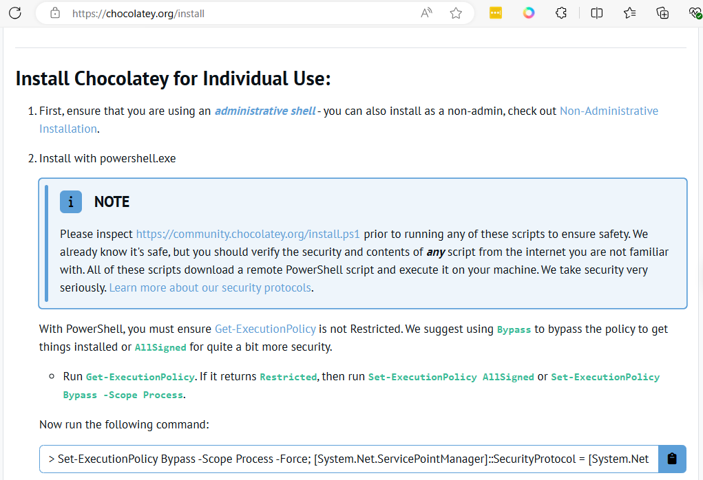
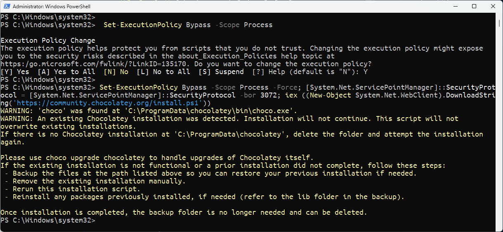
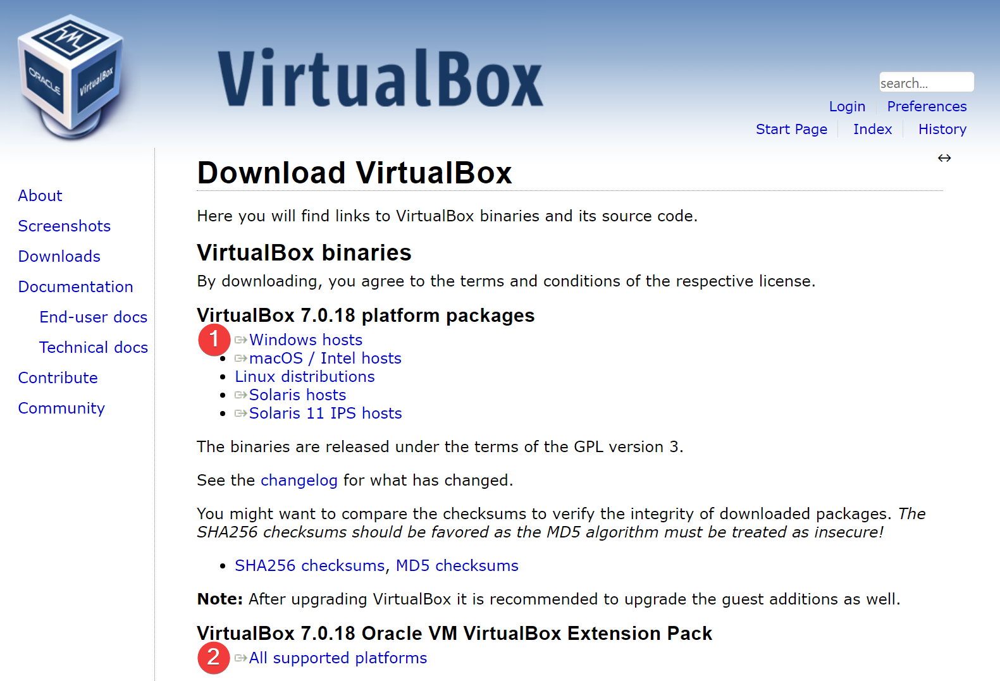
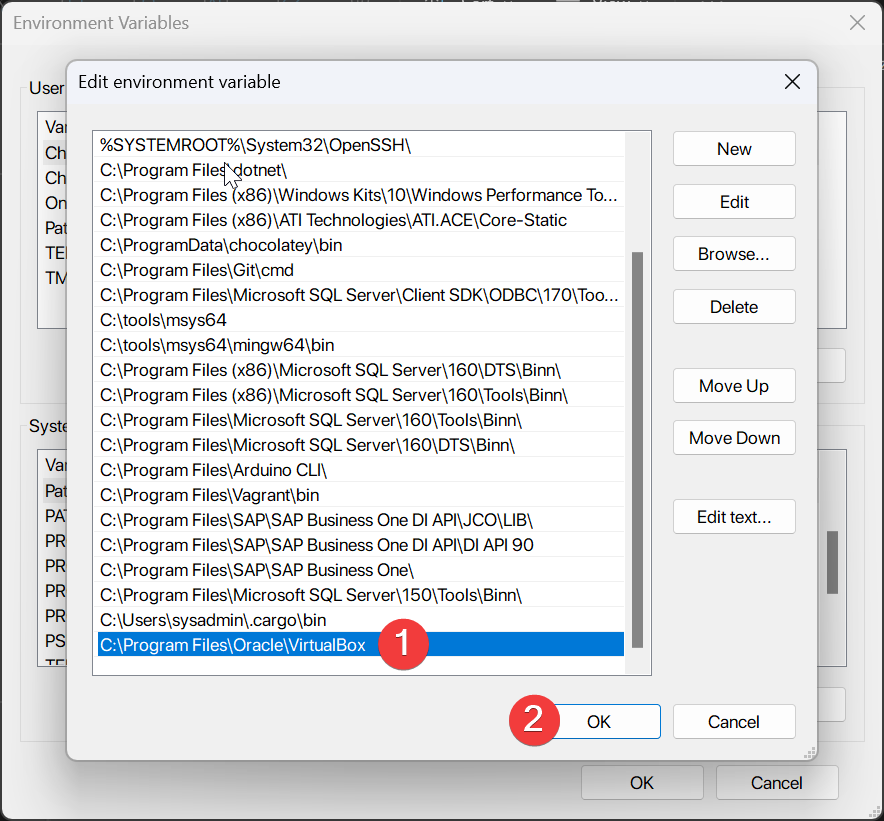
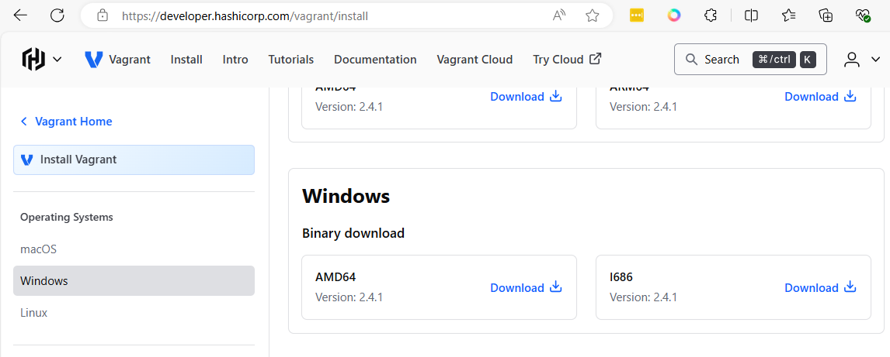
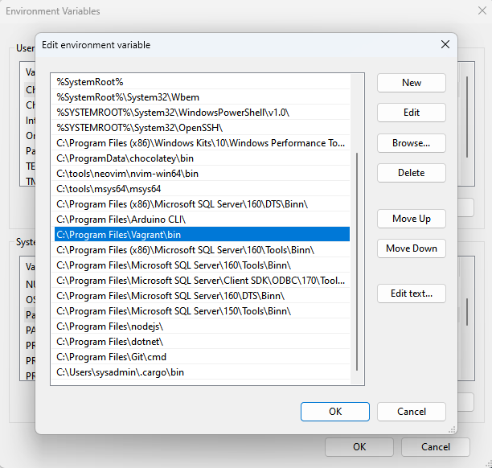
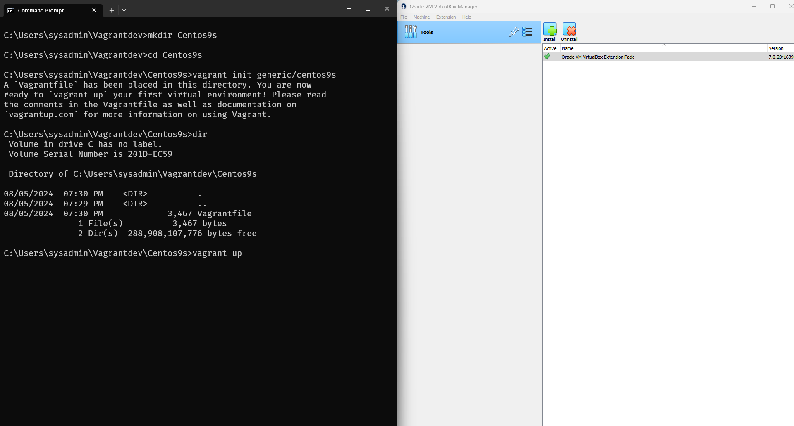
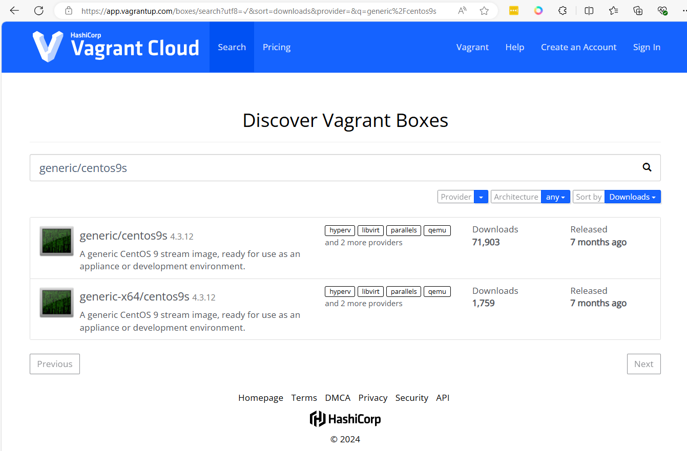
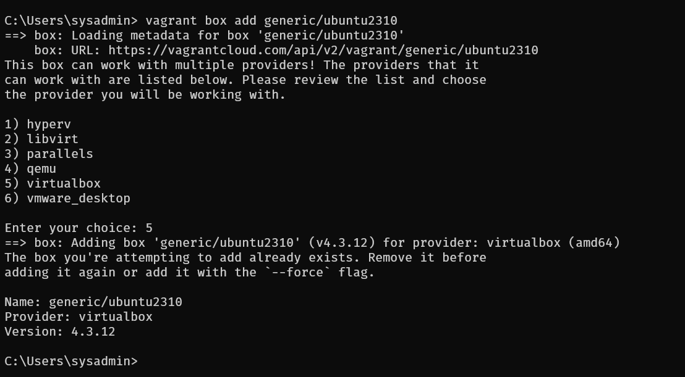
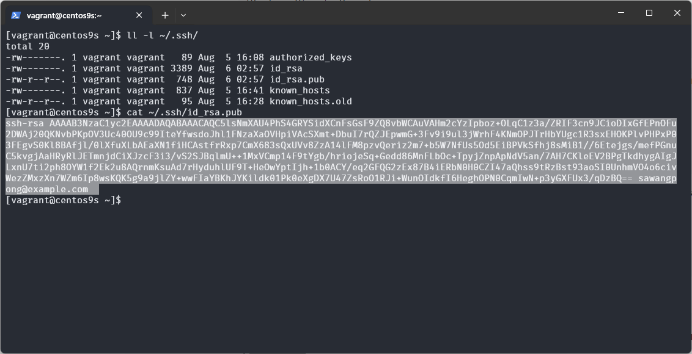

muict-devops
Practical DevOps
- Introduction to DevOps and CI/CD, Vagrant
- Ansible (1)
- Ansible (2)
- Introduction to Containerization and Docker (1)
- Docker (2)
- Introduction to container orchestration and Kubernetes (1)
- Kubernetes (2)
- Application deployment
- –Midterm--
- CI/CD Pipeline and GitLab (1)
- GitLab, GitOps (2)
- Jenkins (1)
- Jenkins (2)
- Infrastructure as Code and Terraform
- Python Automation
- DevSecOps
- –Final--
แนวคิด DevOps
DevOps คืออะไร
DevOps คือ การนำแนวคิดของการพัฒนาซอฟต์แวร์ (Development) และการดำเนินการ (Operations) มารวมกัน เพื่อสร้างความร่วมมือระหว่างทีมพัฒนาและทีมปฏิบัติการไอที ทำให้กระบวนการผลิตและการปรับใช้ซอฟต์แวร์เป็นไปอย่างอัตโนมัติและสามารถทำซ้ำได้ โดยแก้ไขปัญหาเดิม ๆ และนำระบบอัตโนมัติมาใช้ในทุกขั้นตอนของวงจรชีวิตการพัฒนาซอฟต์แวร์ (SDLC) เน้นที่การทำงานร่วมกันของทีมงาน การใช้เครื่องมืออัตโนมัติ และการส่งมอบซอฟต์แวร์ที่สม่ำเสมอ
DevOps คือ ชุดแนวทางปฏิบัติที่รวมเอาการพัฒนาซอฟต์แวร์ (Dev) และการดำเนินการไอที (Ops) เข้าด้วยกัน มีอิทธิพลต่อวงจรชีวิตของแอปพลิเคชันตลอดทุกขั้นตอน ตั้งแต่การวางแผน การพัฒนา การส่งมอบ และการดำเนินการ หลักการสำคัญของ DevOps รวมถึงการยอมรับวัฒนธรรม DevOps การนำแนวทางปฏิบัติ DevOps มาใช้ และการสร้างบริการที่พร้อมให้ใช้งานตลอดเวลา
DevOps กับ ระบบอัตโนมัติ
DevOps ให้เน้นที่การทำงานร่วมกัน, เครื่องมืออัตโนมัติ และการส่งมอบซอฟต์แวร์ที่สม่ำเสมอ จากที่คุณเน้นย้ำถึง 3 ประเด็นหลักคือ การทำงานร่วมกัน, เครื่องมืออัตโนมัติ และการส่งมอบซอฟต์แวร์ที่สม่ำเสมอ ลองปรับเนื้อหาให้มีความเจาะจงมากขึ้นดังนี้
- การทำงานร่วมกัน เน้นวัฒนธรรมองค์กร: สร้างวัฒนธรรมองค์กรที่เปิดกว้าง ส่งเสริมการแบ่งปันความรู้ และการทำงานเป็นทีม สร้างช่องทางการสื่อสารที่สะดวกและมีประสิทธิภาพ เช่น การประชุมร่วมกันเป็นประจำ, ช่องทางการแชท หรือแพลตฟอร์มสำหรับร่วมกันทำงาน บทบาทของแต่ละฝ่าย: อธิบายบทบาทและความรับผิดชอบของแต่ละฝ่ายในทีม DevOps อย่างชัดเจน เน้นความสำคัญของการทำงานข้ามสายงาน (Cross-functional) เครื่องมือสำหรับการทำงานร่วมกัน: แนะนำเครื่องมือที่ช่วยในการทำงานร่วมกัน เช่น Jira, Trello, Confluence, Slack เป็นต้น
- เครื่องมืออัตโนมัติ ประโยชน์ของการใช้เครื่องมืออัตโนมัติ: ลดความผิดพลาดที่เกิดจากการทำงานด้วยมือ เพิ่มความเร็วในการพัฒนาและส่งมอบซอฟต์แวร์ ปรับปรุงคุณภาพของซอฟต์แวร์ ประเภทของเครื่องมืออัตโนมัติ: แบ่งประเภทของเครื่องมือตามขั้นตอนต่างๆ ในวงจรชีวิตของ DevOps เช่น เครื่องมือสำหรับการสร้าง (Build), ทดสอบ (Test), ปรับใช้ (Deploy) และตรวจสอบ (Monitor) ยกตัวอย่างเครื่องมือที่เป็นที่นิยม เช่น Jenkins, Docker, Kubernetes, Ansible เป็นต้น สร้าง Pipeline อัตโนมัติ: อธิบายแนวคิดของ CI/CD Pipeline แสดงตัวอย่างของ Pipeline ที่ทำงานอัตโนมัติตั้งแต่การเขียนโค้ดจนถึงการปรับใช้บน Production
- การส่งมอบซอฟต์แวร์ที่สม่ำเสมอ Continuous Delivery และ Continuous Deployment: อธิบายความแตกต่างระหว่าง CD และ CD เน้นความสำคัญของการส่งมอบซอฟต์แวร์บ่อยครั้งและสม่ำเสมอ การวัดผล: กำหนดตัวชี้วัดสำคัญ (KPI) สำหรับวัดประสิทธิภาพของการส่งมอบซอฟต์แวร์ เช่น Lead time, Deployment frequency, Mean time to recovery (MTTR) การจัดการความเสี่ยง: อธิบายวิธีการจัดการความเสี่ยงในการส่งมอบซอฟต์แวร์บ่อยครั้ง เช่น การทำ A/B testing, Feature flags, Canary releases
เครื่องมือที่เกี่ยวข้อง
เครื่องมือที่ใช้ในการพัฒนา DevOps: สู่การทำงานที่รวดเร็วและมีประสิทธิภาพยิ่งขึ้น DevOps เป็นแนวทางการทำงานที่เน้นความร่วมมือและการใช้เครื่องมืออัตโนมัติเพื่อเพิ่มประสิทธิภาพในการพัฒนาและส่งมอบซอฟต์แวร์ เครื่องมือที่ใช้ใน DevOps นั้นมีหลากหลายประเภท โดยแต่ละประเภทก็มีหน้าที่และจุดเด่นที่แตกต่างกันไป
เครื่องมือที่ใช้ใน DevOps แบ่งออกได้เป็นหลายประเภท ดังนี้
- เครื่องมือสำหรับการจัดการเวอร์ชัน (Version Control)Git:
เป็นเครื่องมือที่ได้รับความนิยมมากที่สุดสำหรับการจัดการเวอร์ชันของโค้ด ช่วยให้ทีมงานสามารถทำงานร่วมกันได้อย่างมีประสิทธิภาพ และติดตามการเปลี่ยนแปลงของโค้ดได้อย่างละเอียด - เครื่องมือสำหรับการสร้าง (Build)Jenkins:
เป็นเครื่องมือสำหรับสร้างระบบอัตโนมัติที่ได้รับความนิยมอย่างแพร่หลาย สามารถใช้ในการสร้าง, ทดสอบ, และปรับใช้ซอฟต์แวร์ได้อย่างอัตโนมัติ Maven, Gradle: เป็นเครื่องมือสำหรับจัดการโครงสร้างและการสร้างโปรเจคสำหรับภาษา Java - เครื่องมือสำหรับการทดสอบ (Testing)
JUnit, TestNG: เป็นเครื่องมือสำหรับเขียนและรัน unit test สำหรับภาษา Java Selenium: เป็นเครื่องมือสำหรับทดสอบเว็บแอปพลิเคชัน Cucumber: เป็นเครื่องมือสำหรับเขียน test case ในรูปแบบที่เข้าใจง่าย โดยใช้ภาษาธรรมชาติ - เครื่องมือสำหรับการปรับใช้ (Deployment)Docker:
เป็นแพลตฟอร์มสำหรับสร้างและจัดการคอนเทนเนอร์ ช่วยให้สามารถแพ็คแอปพลิเคชันและสิ่งแวดล้อมทั้งหมดไว้ในคอนเทนเนอร์เดียว และปรับใช้ได้บนเครื่องใดก็ได้ Kubernetes: เป็นแพลตฟอร์มสำหรับจัดการคอนเทนเนอร์ในระดับคลัสเตอร์ ช่วยให้สามารถปรับขนาดและจัดการแอปพลิเคชันที่ทำงานบนคอนเทนเนอร์ได้อย่างง่ายดาย Ansible: เป็นเครื่องมือสำหรับจัดการโครงสร้างพื้นฐานแบบอัตโนมัติ ช่วยให้สามารถปรับใช้และกำหนดค่าเซิร์ฟเวอร์ได้อย่างรวดเร็ว - เครื่องมือสำหรับการตรวจสอบ (Monitoring)Prometheus: เป็นระบบสำหรับเก็บรวบรวมและวิเคราะห์ข้อมูลเมตริกต่างๆ ของระบบ Grafana: เป็นเครื่องมือสำหรับสร้าง Dashboard เพื่อแสดงข้อมูลเมตริกที่ได้จาก Prometheus ELK Stack: ประกอบด้วย Elasticsearch, Logstash, และ Kibana ใช้สำหรับเก็บและวิเคราะห์ log file
- เครื่องมือสำหรับการทำงานร่วมกัน (Collaboration)Jira, Trello: เป็นเครื่องมือสำหรับการจัดการงานและติดตามความคืบหน้าของโครงการ Slack, Microsoft Teams: เป็นเครื่องมือสำหรับการสื่อสารและทำงานร่วมกันเป็นทีม การเลือกเครื่องมือที่เหมาะสม การเลือกเครื่องมือที่เหมาะสมจะขึ้นอยู่กับขนาดของโครงการ, ความซับซ้อนของระบบ, และความต้องการของทีมงาน โดยควรพิจารณาถึงปัจจัยต่างๆ ดังนี้
- ความง่ายในการใช้งาน: เครื่องมือควรใช้งานง่ายและมีเอกสารประกอบที่ครบถ้วน
- ความยืดหยุ่น: เครื่องมือควรสามารถปรับเปลี่ยนและขยายได้ตามความต้องการ
- การสนับสนุน: เครื่องมือควรมีชุมชนผู้ใช้งานที่แข็งแกร่งและได้รับการสนับสนุนจากผู้พัฒนาอย่างต่อเนื่อง สรุป
สรุปเครื่องมือ DevOps
มีความสำคัญอย่างยิ่งในการช่วยให้ทีมงานสามารถทำงานร่วมกันได้อย่างมีประสิทธิภาพ และส่งมอบซอฟต์แวร์ได้อย่างรวดเร็วและมีคุณภาพ การเลือกเครื่องมือที่เหมาะสมจะช่วยให้ทีมงานสามารถบรรลุเป้าหมายทางธุรกิจได้อย่างมีประสิทธิภาพมากยิ่งขึ้น
แนวคิด CI/CD
CI/CD ย่อมาจาก Continuous Integration และ Continuous Delivery (หรือ Continuous Deployment) เป็นชุดของแนวปฏิบัติและเครื่องมือในการพัฒนาซอฟต์แวร์ที่มุ่งเน้นการปรับปรุงกระบวนการสร้าง ทดสอบ และปล่อยแอปพลิเคชันให้ดีขึ้น รายละเอียดของแต่ละส่วนมีดังนี้:
Continuous Integration (CI)
- คำจำกัดความ: Continuous Integration คือการรวมโค้ดที่เปลี่ยนแปลงเข้าไปในที่เก็บรวมศูนย์หลายครั้งต่อวัน
- กระบวนการ:
- นักพัฒนารวมการเปลี่ยนแปลงโค้ดของตน: นักพัฒนารวมการเปลี่ยนแปลงโค้ดของตนเข้าไปในที่เก็บรวมศูนย์บ่อยๆ
- การสร้างและการทดสอบอัตโนมัติ: ทุกครั้งที่มีการรวมโค้ดจะมีการสร้างและทดสอบโดยอัตโนมัติเพื่อตรวจหาปัญหาตั้งแต่เนิ่นๆ
- ข้อเสนอแนะทันที: นักพัฒนาจะได้รับข้อเสนอแนะทันทีเกี่ยวกับคุณภาพและความถูกต้องของโค้ด
Continuous Delivery (CD)
- คำจำกัดความ: Continuous Delivery เป็นการขยายของ Continuous Integration ที่ทำให้แน่ใจว่าการเปลี่ยนแปลงโค้ดจะถูกเตรียมพร้อมสำหรับการปล่อยไปยังการใช้งานจริงโดยอัตโนมัติ
- กระบวนการ:
- การปล่อยอัตโนมัติ: เมื่อโค้ดผ่านการทดสอบทุกขั้นตอนแล้ว มันสามารถถูกปล่อยไปยังสภาพแวดล้อมการทดสอบได้
- การอนุมัติด้วยตนเอง: การปล่อยขั้นสุดท้ายไปยังการใช้งานจริงอาจต้องการการอนุมัติด้วยตนเองแต่พร้อมปล่อยได้ทุกเมื่อ
- ความสม่ำเสมอ: ทำให้มั่นใจว่าซอฟต์แวร์สามารถถูกปล่อยได้อย่างเชื่อถือได้ทุกเมื่อ
Continuous Deployment (CD)
- คำจำกัดความ: Continuous Deployment ไปไกลกว่า Continuous Delivery โดยการปล่อยทุกการเปลี่ยนแปลงที่ผ่านทุกขั้นตอนของท่อการผลิตไปยังการใช้งานจริงโดยอัตโนมัติ
- กระบวนการ:
- อัตโนมัติทั้งหมด: ไม่ต้องการการอนุมัติด้วยตนเอง ทำให้กระบวนการปล่อยเป็นอัตโนมัติทั้งหมด
- การปล่อยทันที: การเปลี่ยนแปลงโค้ดจะถูกปล่อยไปยังการใช้งานจริงทันทีที่ผ่านการทดสอบทั้งหมด
ประโยชน์ของ CI/CD
- การส่งมอบที่รวดเร็วขึ้น: เร่งกระบวนการปล่อยฟีเจอร์และการแก้ไขใหม่ๆ
- คุณภาพสูงขึ้น: การตรวจหาข้อบกพร่องและปัญหาตั้งแต่เนิ่นๆ ช่วยปรับปรุงคุณภาพของโค้ดโดยรวม
- การร่วมมือที่ดีขึ้น: ส่งเสริมการร่วมมือที่ดีขึ้นระหว่างสมาชิกทีมเพราะปัญหาการรวมถูกตรวจพบและแก้ไขตั้งแต่เนิ่นๆ
- ลดความเสี่ยง: การอัปเดตที่เล็กกว่าและบ่อยครั้งลดความเสี่ยงของปัญหาการปล่อยเมื่อเทียบกับการปล่อยขนาดใหญ่และไม่บ่อยครั้ง
เครื่องมือและเทคโนโลยี
- เครื่องมือ CI: Jenkins, Travis CI, CircleCI, GitLab CI, Bamboo
- เครื่องมือ CD: Spinnaker, Argo CD, Tekton
- การควบคุมเวอร์ชัน: Git, Subversion
- การทำคอนเทนเนอร์: Docker, Kubernetes
แนวปฏิบัติ CI/CD เป็นสิ่งสำคัญสำหรับการพัฒนาซอฟต์แวร์สมัยใหม่ ช่วยให้ทีมสามารถส่งมอบโค้ดได้อย่างเชื่อถือได้และมีประสิทธิภาพ
ติดตั้ง Vagrant Tools ใน windows

1 web vagrant https://www.vagrantup.com/
เนื้อหา Course Objective
- create virutal machine in Oracle Virtualbox by using Vagrant
- Setup windows 11 to run Vagrant
- Create Vagrantfile and setup paramenter of VM
- Understand network configuration
- NAT network
- Private network
- Public network
- File sync between Host and VM with package Rsync
- Virtualization Customization
- Customize number of CPU
- Customize number of Memory
- Customize Nested Virtualization
- Download image from Vagrant Cloud
- Ubuntu image
- Rocky image
- Understand network configuration
Vagrant เป็นเครื่องมือสำหรับการสร้างและจัดการสภาพแวดล้อมการพัฒนาซอฟต์แวร์แบบเสมือนจริง (virtualized development environments) มันช่วยให้นักพัฒนาซอฟต์แวร์สามารถสร้างและกำหนดค่าการพัฒนาได้อย่างง่ายดายและรวดเร็ว โดยไม่ต้องกังวลเกี่ยวกับความแตกต่างของสภาพแวดล้อมการพัฒนาระหว่างทีมงานหรือเครื่องต่างๆ
คุณสมบัติของ Vagrant
- การสร้างและจัดการ VM (Virtual Machines): Vagrant ช่วยให้สามารถสร้างและจัดการเครื่องเสมือนบนหลายแพลตฟอร์มเช่น VirtualBox, VMware, AWS, Docker ฯลฯ
- การกำหนดค่าโดยใช้ไฟล์ Vagrantfile: นักพัฒนาสามารถกำหนดค่าการตั้งค่าเครื่องเสมือนผ่านไฟล์ Vagrantfile ซึ่งเป็นไฟล์ข้อความธรรมดาที่ระบุการตั้งค่าต่างๆ เช่น ระบบปฏิบัติการ ซอฟต์แวร์ที่ต้องติดตั้ง และการตั้งค่าเครือข่าย
- การแบ่งปันสภาพแวดล้อม: นักพัฒนาสามารถแบ่งปันสภาพแวดล้อมการพัฒนากับสมาชิกในทีมได้ง่ายๆ เพียงแค่แชร์ไฟล์ Vagrantfile ทำให้ทุกคนสามารถมีสภาพแวดล้อมการพัฒนาที่เหมือนกัน
- การจัดการโปรวิชั่น (Provisioning): Vagrant รองรับการโปรวิชั่นโดยใช้เครื่องมือต่างๆ เช่น Shell scripts, Ansible, Chef, Puppet ทำให้นักพัฒนาสามารถติดตั้งและกำหนดค่าซอฟต์แวร์ในเครื่องเสมือนได้อย่างอัตโนมัติ
ประโยชน์ของ Vagrant
- สภาพแวดล้อมที่สม่ำเสมอ: ลดปัญหาที่เกิดจากความแตกต่างของสภาพแวดล้อมการพัฒนา เช่น "works on my machine" ปัญหา
- การตั้งค่าที่รวดเร็วและง่ายดาย: ช่วยลดเวลาในการตั้งค่าสภาพแวดล้อมการพัฒนา
- การทำงานร่วมกันที่ดีขึ้น: ทำให้ทีมงานสามารถทำงานร่วมกันได้อย่างมีประสิทธิภาพมากขึ้นโดยไม่ต้องกังวลเกี่ยวกับสภาพแวดล้อมที่แตกต่างกัน
- การทดลองและทดสอบได้ง่าย: นักพัฒนาสามารถทดลองและทดสอบซอฟต์แวร์ในสภาพแวดล้อมที่ควบคุมได้
การใช้งานเบื้องต้น
- ติดตั้ง Vagrant: ดาวน์โหลดและติดตั้ง Vagrant จาก เว็บไซต์ Vagrant
- สร้างโปรเจคใหม่: สร้างไดเรกทอรีใหม่และรันคำสั่ง
vagrant initเพื่อสร้างไฟล์ Vagrantfile - กำหนดค่า Vagrantfile: แก้ไขไฟล์ Vagrantfile เพื่อกำหนดค่าการตั้งค่าต่างๆ ของเครื่องเสมือน
- เริ่มเครื่องเสมือน: รันคำสั่ง
vagrant upเพื่อสร้างและเริ่มเครื่องเสมือน - เชื่อมต่อกับเครื่องเสมือน: รันคำสั่ง
vagrant sshเพื่อเชื่อมต่อกับเครื่องเสมือนผ่าน SSH
Vagrant เป็นเครื่องมือที่มีประโยชน์มากสำหรับนักพัฒนาซอฟต์แวร์ที่ต้องการสร้างและจัดการสภาพแวดล้อมการพัฒนาแบบเสมือนจริงอย่างมีประสิทธิภาพ
Step1 ปิดการทำงานของ HyperV
Run Setup command in Powershell Open Powershell with Adminstrator mode Run:
PS > Disable-WindowsOptionalFeature -Online -FeatureName Microsoft-Hyper-V-All
Run:
PS > bcdedit /set hypervisorlaunchtype off
Run:
PS > DISM /Online /Disable-Feature:Microsoft-Hyper-V
Step2 ติดตั้ง Rsync ผ่านทาง Chocolatey
Chocolatey เป็นเครื่องมือสำหรับการจัดการแพ็คเกจ (package manager) บน Windows ซึ่งช่วยให้ผู้ใช้สามารถติดตั้ง อัปเดต และจัดการซอฟต์แวร์ได้ง่ายขึ้น มันทำงานคล้ายกับตัวจัดการแพ็คเกจบนระบบปฏิบัติการ Unix อย่าง apt บน Debian/Ubuntu หรือ yum บน CentOS/RHEL
คุณสมบัติของ Chocolatey
- การติดตั้งซอฟต์แวร์อย่างง่ายดาย: สามารถติดตั้งซอฟต์แวร์ต่างๆ ได้อย่างง่ายดายผ่านคำสั่งเดียว
- การจัดการการอัปเดต: สามารถอัปเดตซอฟต์แวร์ให้เป็นเวอร์ชันล่าสุดได้อย่างรวดเร็ว
- การลบซอฟต์แวร์: สามารถลบซอฟต์แวร์ที่ติดตั้งด้วย Chocolatey ได้อย่างง่ายดาย
- การจัดการแพ็คเกจ: รองรับการติดตั้งหลายแพ็คเกจพร้อมกัน การสร้างสคริปต์สำหรับการติดตั้งซอฟต์แวร์หลายๆ ตัว เป็นต้น
ติดตั้ง chocolatey บน windows 11 https://chocolatey.org/install และทำตามคำแนะนำ 
Run:
> Set-ExecutionPolicy Bypass -Scope Process
> Set-ExecutionPolicy Bypass -Scope Process -Force; [System.Net.ServicePointManager]::SecurityProtocol = [System.Net.ServicePointManager]::SecurityProtocol -bor 3072; iex ((New-Object System.Net.WebClient).DownloadString('https://community.chocolatey.org/install.ps1'))
Restart Windows Powershell

Run: ติดตั้ง Rsync
> choco install rsync
Step3 ติดตั้ง virtualbox บน Windows
- เปิด link https://www.virtualbox.org/wiki/Downloads
- Download Virtualbox and Extension pack 
Step4 เพิ่ม C:\Program Files\Oracle\VirtualBox to path environment
เพื่อให้สามารถใช้คำสั่งของ virtualbox ผ่าน Command line
- Press the Start key on your keyboard.
- Search and open “Edit the system environment variables.”
- Go to the “Advanced” tab.
- Click the “Environment variables” button.
- Select the “Path” variable under “User variables” or “System variables.”
- Click the “Edit” button.
- Press the “New” button.
- Type the full directory path of the program.
- Press “Enter” to confirm the path.
- Click “Ok.”
- Press the “Ok” button in the Environment Variables window.
- Click “Ok” in the System Variables window.

Step5 คิดคั้ง Install Vagrant

ตรวจสอบ ว่า มี C:\Program Files\Vagrant\bin อยู่ใน path ของ Windows หรือไม่ 
ทดสอบ command ใน Terminal
C:\Users\sysadmin>vagrant --version
Vagrant 2.4.1
C:\Users\sysadmin>vagrant --help
Usage: vagrant [options] <command> [<args>]
-h, --help Print this help.
Common commands:
autocomplete manages autocomplete installation on host
box manages boxes: installation, removal, etc.
cloud manages everything related to Vagrant Cloud
destroy stops and deletes all traces of the vagrant machine
global-status outputs status Vagrant environments for this user
halt stops the vagrant machine
help shows the help for a subcommand
init initializes a new Vagrant environment by creating a Vagrantfile
login
package packages a running vagrant environment into a box
plugin manages plugins: install, uninstall, update, etc.
port displays information about guest port mappings
powershell connects to machine via powershell remoting
provision provisions the vagrant machine
push deploys code in this environment to a configured destination
rdp connects to machine via RDP
reload restarts vagrant machine, loads new Vagrantfile configuration
resume resume a suspended vagrant machine
serve start Vagrant server
snapshot manages snapshots: saving, restoring, etc.
ssh connects to machine via SSH
ssh-config outputs OpenSSH valid configuration to connect to the machine
status outputs status of the vagrant machine
suspend suspends the machine
up starts and provisions the vagrant environment
upload upload to machine via communicator
validate validates the Vagrantfile
version prints current and latest Vagrant version
winrm executes commands on a machine via WinRM
winrm-config outputs WinRM configuration to connect to the machine
For help on any individual command run `vagrant COMMAND -h`
Additional subcommands are available, but are either more advanced
or not commonly used. To see all subcommands, run the command
`vagrant list-commands`.
--[no-]color Enable or disable color output
--machine-readable Enable machine readable output
-v, --version Display Vagrant version
--debug Enable debug output
--timestamp Enable timestamps on log output
--debug-timestamp Enable debug output with timestamps
--no-tty Enable non-interactive output
C:\Users\sysadmin>
Step6 Basic Vagrantfile
ให้สร้าง folder VagrantDev เพื่อใช้เป็น Project folder ก่อน
C:\Users\sysadmin> mkdir Vagrantdev
C:\Users\sysadmin> cd Vagrantdev
C:\Users\sysadmin> mkdir Centos9s
C:\Users\sysadmin> cd Centos9s
C:\Users\sysadmin> vagrant init generic/centos9s
C:\Users\sysadmin> vagrant up

ผลคำสั่ง
- vagrant init สร้าง file ชื่อ Vagrantfile
- Vagrant up จะทำการ Download image จาก Vagrant Cloud https://app.vagrantup.com/boxes/search

Step7 Download image แบบ manual
C:\Users\sysadmin> vagrant box add generic/ubuntu2310
เลือก ชนิด Hypervisor เป็น Virtualbox (หมายเลข 5)

Step 8 สรุปคำสั่งพื้นฐานของ Vagrant
คำสั่ง Download Vagrant box
vagrant box add <image-name>- แทน image-name ด้วยชื่อของ image เช่น
generic/centos9s
- แทน image-name ด้วยชื่อของ image เช่น
การตั้งค่าและการจัดการเครื่องเสมือน
vagrant init- สร้างไฟล์
Vagrantfileในไดเรกทอรีปัจจุบัน
- สร้างไฟล์
vagrant upหรือvagrant up --provider=virtualbox- สร้างและเริ่มเครื่องเสมือนตามการตั้งค่าใน
Vagrantfile
- สร้างและเริ่มเครื่องเสมือนตามการตั้งค่าใน
vagrant ssh- เชื่อมต่อกับเครื่องเสมือนผ่าน SSH
vagrant halt- ปิดเครื่องเสมือน
vagrant destroy- ลบเครื่องเสมือน
การจัดการการตั้งค่าและการโปรวิชั่น
vagrant reload- รีสตาร์ทเครื่องเสมือนและโหลดการตั้งค่าใหม่จาก
Vagrantfileแต่ไม่ Run provision
- รีสตาร์ทเครื่องเสมือนและโหลดการตั้งค่าใหม่จาก
vagrant reload --provision- Force ให้ Run provision ด้วย ขณะที่มีการ Reload
vagrant provision- รันโปรวิชั่นเนอร์ที่กำหนดไว้ใน
Vagrantfile
- รันโปรวิชั่นเนอร์ที่กำหนดไว้ใน
การตรวจสอบสถานะและข้อมูลเครื่องเสมือน
vagrant status- แสดงสถานะปัจจุบันของเครื่องเสมือน
vagrant global-status- แสดงสถานะของเครื่องเสมือนทั้งหมดที่จัดการโดย Vagrant บนเครื่องคอมพิวเตอร์นั้นๆ
vagrant ssh-config- แสดงการตั้งค่า SSH สำหรับเชื่อมต่อกับเครื่องเสมือน
การจัดการสแน็ปช็อต
vagrant snapshot save [ชื่อสแน็ปช็อต]- บันทึกสถานะปัจจุบันของเครื่องเสมือนเป็นสแน็ปช็อต
vagrant snapshot restore [ชื่อสแน็ปช็อต]- กู้คืนสถานะเครื่องเสมือนจากสแน็ปช็อตที่บันทึกไว้
vagrant snapshot list- แสดงรายการสแน็ปช็อตทั้งหมดของเครื่องเสมือน
vagrant snapshot delete [ชื่อสแน็ปช็อต]- ลบสแน็ปช็อตที่ระบุ
การซิงค์ไฟล์และโฟลเดอร์
vagrant rsync- ซิงค์ไฟล์จากโฮสต์ไปยังเครื่องเสมือนด้วย rsync
vagrant rsync-auto- ซิงค์ไฟล์จากโฮสต์ไปยังเครื่องเสมือนโดยอัตโนมัติเมื่อมีการเปลี่ยนแปลงไฟล์
การใช้คำสั่งเหล่านี้ช่วยให้คุณสามารถจัดการเครื่องเสมือนได้อย่างง่ายดายและมีประสิทธิภาพในกระบวนการพัฒนาซอฟต์แวร์
Run Vagrant provisioning
Vagrant Workshop: Single Node LAMP Stack
วัตถุประสงค์
เรียนรู้วิธีการสร้างและจัดการสภาพแวดล้อม LAMP (Linux, Apache, MySQL, PHP) บน VM(VM) โดยใช้ Vagrant
ขั้นตอนการสร้าง Single Node LAMP Stack ด้วย Vagrant
1. การตั้งค่าโปรเจค
- เปิดเทอร์มินัลหรือ PowerShell
- สร้างไดเรกทอรีใหม่สำหรับโปรเจค
mkdir vagrant-lamp cd vagrant-lamp - รันคำสั่ง
vagrant initเพื่อสร้างไฟล์Vagrantfilevagrant init generic/ubuntu2304
2. การกำหนดค่า Vagrantfile
เปิดไฟล์ Vagrantfile และแก้ไขดังนี้:
Vagrant.configure("2") do |config|
# เลือก box ที่จะใช้
config.vm.box = "generic/ubuntu2304"
# กำหนด hostname
config.vm.hostname = "lamp-stack"
# การตั้งค่าเครือข่าย
config.vm.network "private_network", ip: "192.168.33.10"
config.vm.network "forwarded_port", guest: 80, host: 8080
# การติดตั้ง Apache, MySQL, PHP
config.vm.provision "shell", inline: <<-SHELL
apt-get update
apt-get install -y apache2
apt-get install -y mysql-server
apt-get install -y php libapache2-mod-php php-mysql
systemctl enable apache2
systemctl start apache2
SHELL
end
3. การเริ่มต้น VM
รันคำสั่ง vagrant up เพื่อสร้างและเริ่มต้นเครื่องเสมือน
vagrant up --provider=virtualbox --provision

ตรวจสอบ ssh-config
vagrant ssh-config

รันคำสั่ง vagrant ssh เพื่อเชื่อมต่อกับเครื่องเสมือนผ่าน SSH
vagrant ssh

การใช้คำสั่ง lsof
The lsof command, in combination with other tools like top or ps, can be very helpful when diagnosing network issue.
$ sudo lsof -i TCP:22
คำอธิบายแต่ละ Colume:
- COMMAND: The command name
- PID: Process ID (PID) of the process
- USER: Owner of the process
- FD: File descriptor definition
- TYPE: Type of file descriptor
- DEVICE: Device number or, in the case of a block device, character or other
- SIZE/OFF: Dimension of the file or offset (the suffix
0tis the offset) - NODE: Node description of the local file; this could be the number of the local file, TCP, UDP, or STR (stream)
- NAME: The name of the mount point where the file resides
$ sudo lsof -i TCP:22

4. การทดสอบ Apache
เปิดเว็บเบราว์เซอร์และเข้าไปที่ http://localhost:8080 หากทุกอย่างถูกตั้งค่าอย่างถูกต้อง คุณควรเห็นหน้าเริ่มต้นของ Apache

5. การทดสอบ PHP
สร้างไฟล์ PHP เพื่อทดสอบการทำงานของ PHP
$ sudo su -
# echo "<?php phpinfo(); ?>" > /var/www/html/info.php

เปิดเว็บเบราว์เซอร์และเข้าไปที่ http://localhost:8080/info.php ควรเห็นหน้าแสดงข้อมูล PHP

6. การทดสอบ MySQL
เชื่อมต่อกับ MySQL โดยใช้คำสั่งต่อไปนี้: โดยให้เปลี่ยน เป็น user root ก่อน
$ sudo su -
# mysql -u root -p
ค่าเริ่มต้นจะเป็นค่าว่าง กด Enter เพื่อเข้าสู่ MySQL shell รันคำสั่งต่อไปนี้เพื่อสร้างฐานข้อมูลทดสอบ:
CREATE DATABASE testdb;
SHOW DATABASES;

7.การจัดการเครื่องเสมือน
ปิด VM
vagrant halt
ลบ VM
vagrant destroy
สรุป
การใช้ Vagrant สำหรับการตั้งค่า LAMP stack จะช่วยให้คุณสามารถสร้างสภาพแวดล้อมการพัฒนาที่สม่ำเสมอและสามารถทำซ้ำได้ง่ายดาย เมื่อคุณมี Vagrantfile คุณสามารถแบ่งปันไฟล์นี้กับทีมของคุณเพื่อให้ทุกคนสามารถใช้สภาพแวดล้อมการพัฒนาเดียวกันได้
vagrant workshop: Docker host
วัตถุประสงค์
เรียนรู้วิธีการสร้าง Docker host สำหรับการเรียนรู้ Container
ขั้นตอนการสร้าง Single Node LAMP Stack ด้วย Vagrant
1. การตั้งค่าโปรเจค
- เปิดเทอร์มินัลหรือ PowerShell
- สร้างไดเรกทอรีใหม่สำหรับโปรเจค
mkdir vagrant-docker cd vagrant-docker - รันคำสั่ง
vagrant initเพื่อสร้างไฟล์Vagrantfilevagrant init generic/ubuntu2304
2. การกำหนดค่า Vagrantfile
เปิดไฟล์ Vagrantfile และแก้ไขดังนี้:
# -*- mode: ruby -*-
# vi: set ft=ruby :
# All Vagrant configuration is done below. The "2" in Vagrant.configure
# configures the configuration version (we support older styles for
# backwards compatibility). Please don't change it unless you know what
# you're doing.
$script = <<-SCRIPT
# ติดตั้ง packages
sudo apt install apt-transport-https ca-certificates curl software-properties-common -y
# ติดตั้ง Docker official GPG key
curl -fsSL https://download.docker.com/linux/ubuntu/gpg | sudo apt-key add -
# ติดตั้ง Repository
sudo add-apt-repository "deb [arch=amd64] https://download.docker.com/linux/ubuntu $(lsb_release -cs) stable" -y
sudo apt-cache policy docker-ce
# ติดตั้ง Docker
sudo apt-get install docker-ce docker-ce-cli containerd.io docker-buildx-plugin docker-compose-plugin -y
sudo usermod -aG docker vagrant
# เริ่มต้น Docker service
sudo systemctl enable --now docker
SCRIPT
Vagrant.configure("2") do |config|
config.vm.box = "generic/ubuntu2304"
config.vm.network "private_network", ip: "192.168.33.10"
config.vm.synced_folder ".", "/vagrant", type: 'rsync'
config.vm.provider "virtualbox" do |vb|
vb.cpus = 2
vb.memory = 2048
end
config.vm.provision "shell" , inline: $script
end
3. การเริ่มต้น VM
รันคำสั่ง vagrant up เพื่อสร้างและเริ่มต้นเครื่องเสมือน
vagrant up --provider=virtualbox --provision
4. รันคำสั่ง vagrant ssh เพื่อเชื่อมต่อกับเครื่องเสมือนผ่าน SSH
vagrant ssh
5. ทดสอบคำสั่ง docker ps
vagrant@ubuntu2304:~$ docker ps
CONTAINER ID IMAGE COMMAND CREATED STATUS PORTS NAMES
6. ทดสอบเลือก pull image จาก docker hub https://hub.docker.com/search?image_filter=official
vagrant@ubuntu2304:~$ docker pull python
Using default tag: latest
latest: Pulling from library/python
ca4e5d672725: Pull complete
30b93c12a9c9: Pull complete
10d643a5fa82: Pull complete
d6dc1019d793: Pull complete
5afcd2745721: Pull complete
b5dbe4a95907: Pull complete
26b10780b7b0: Pull complete
d2f126f49360: Pull complete
Digest: sha256:e8be0ea148390d08bc077840cf87ac6a538d80b0ea1e8752b3e3982987cd0a53
Status: Downloaded newer image for python:latest
docker.io/library/python:latest
แนะนำ Ansible
Ansible คืออะไร
Ansible เป็นเครื่องมือที่ใช้ในการจัดการและการตั้งค่าโครงสร้างพื้นฐาน (Infrastructure) แบบอัตโนมัติ โดยมุ่งเน้นที่ความง่ายในการใช้งานและการตั้งค่า รวมถึงสามารถจัดการระบบในลักษณะต่าง ๆ เช่น การตั้งค่าเซิร์ฟเวอร์, การติดตั้งซอฟต์แวร์, และการจัดการคอนฟิกูเรชัน

คุณสมบัติหลักของ Ansible
-
การตั้งค่าและการจัดการโครงสร้างพื้นฐาน: Ansible ใช้เพื่อจัดการโครงสร้างพื้นฐานทั้งในระดับเซิร์ฟเวอร์และแอปพลิเคชันอย่างมีประสิทธิภาพ โดยไม่ต้องใช้โค้ดที่ซับซ้อน
-
ไม่ต้องติดตั้ง Agent: Ansible ใช้การเชื่อมต่อ SSH (สำหรับระบบ Unix/Linux) หรือ WinRM (สำหรับ Windows) เพื่อทำการจัดการโฮสต์ โดยไม่ต้องติดตั้งโปรแกรมหรือ Agent เพิ่มเติมบนโฮสต์เป้าหมาย
-
การใช้ YAML: Ansible ใช้ YAML (YAML Ain't Markup Language) สำหรับการเขียน Playbooks ซึ่งเป็นไฟล์ที่ประกอบด้วยคำสั่งในการตั้งค่าและการจัดการโครงสร้างพื้นฐาน ซึ่งทำให้การอ่านและเขียนโค้ดทำได้ง่าย
-
ความสามารถในการจัดการหลายโฮสต์พร้อมกัน: Ansible สามารถจัดการหลายโฮสต์พร้อมกันจากจุดเดียว ทำให้การดำเนินการในสภาพแวดล้อมขนาดใหญ่มีประสิทธิภาพมากขึ้น
-
การจัดการความลับและการเข้ารหัส: Ansible Vault ช่วยให้สามารถจัดการข้อมูลลับ เช่น รหัสผ่าน หรือคีย์การเข้าถึง ได้อย่างปลอดภัย
-
การใช้งานง่าย: Ansible มีโครงสร้างที่เรียบง่ายและใช้งานง่าย ซึ่งช่วยลดความซับซ้อนในการจัดการโครงสร้างพื้นฐาน
แนวทางการทำงานของ Ansible
-
การเชื่อมต่อ: Ansible เชื่อมต่อกับโฮสต์เป้าหมายผ่าน SSH หรือ WinRM
-
การรัน Playbooks: Ansible รันคำสั่งที่ระบุในไฟล์ Playbook ที่เขียนด้วย YAML
-
การตรวจสอบและรายงานผล: Ansible ตรวจสอบผลลัพธ์และรายงานสถานะการดำเนินการ
ตัวอย่างการใช้งาน
- การตั้งค่าเซิร์ฟเวอร์เว็บ: ติดตั้งและตั้งค่าเซิร์ฟเวอร์เว็บ เช่น Apache หรือ Nginx
- การจัดการแพ็กเกจ: ติดตั้งหรืออัพเดตซอฟต์แวร์
- การจัดการคอนฟิกูเรชัน: ปรับแต่งการตั้งค่าต่าง ๆ ของระบบและแอปพลิเคชัน
ตัวอย่าง Playbook
นี่คือตัวอย่างของไฟล์ Playbook ที่ใช้ในการติดตั้ง Nginx บนเซิร์ฟเวอร์:
- name: Install and start Nginx
hosts: webservers
become: yes
tasks:
- name: Install Nginx
apt:
name: nginx
state: present
- name: Start Nginx service
service:
name: nginx
state: started
Ansible Engine
Ansible Engine คือส่วนหลักของ Ansible ที่ใช้ในการทำงานหลักในการจัดการและการตั้งค่าโครงสร้างพื้นฐาน (Infrastructure) แบบอัตโนมัติ มันเป็นเครื่องมือที่ใช้ในการควบคุมการทำงานของโฮสต์หลาย ๆ เครื่องจากจุดเดียวโดยไม่ต้องติดตั้งโปรแกรมหรือ agent เพิ่มเติมบนโฮสต์เป้าหมาย
คุณสมบัติหลักของ Ansible Engine
-
การควบคุมการทำงานจากจุดเดียว: Ansible Engine ช่วยให้ผู้ใช้สามารถควบคุมการทำงานและการตั้งค่าหลาย ๆ โฮสต์จากจุดเดียวผ่านไฟล์ Playbook และคำสั่ง ad-hoc
-
การใช้ YAML สำหรับ Playbooks: ใช้ YAML (YAML Ain't Markup Language) ในการเขียน Playbooks ซึ่งเป็นไฟล์ที่กำหนดงานที่ต้องการให้ Ansible ทำ โดย Playbooks จะประกอบด้วยชุดของคำสั่งที่เรียงลำดับในการดำเนินการ
-
การจัดการโฮสต์ผ่าน SSH หรือ WinRM: Ansible Engine เชื่อมต่อกับโฮสต์เป้าหมายผ่าน SSH (สำหรับระบบ Unix/Linux) หรือ WinRM (สำหรับ Windows) โดยไม่ต้องติดตั้ง agent บนโฮสต์
-
การทำงานแบบ Idempotent: Ansible Engine ทำงานโดยมีลักษณะ idempotent หมายความว่าการรันคำสั่งเดียวกันหลายครั้งจะให้ผลลัพธ์เหมือนกันเสมอ โดยไม่ทำให้เกิดการเปลี่ยนแปลงที่ไม่จำเป็น
-
การจัดการกับหลายโฮสต์พร้อมกัน: Ansible Engine สามารถจัดการกับหลายโฮสต์พร้อมกันจากจุดเดียว โดยใช้การจัดกลุ่มโฮสต์และการจัดการงานแบบขนาน
-
การจัดการความลับด้วย Ansible Vault: Ansible Engine ใช้ Ansible Vault สำหรับการเข้ารหัสข้อมูลลับ เช่น รหัสผ่าน หรือคีย์การเข้าถึง เพื่อให้แน่ใจว่าข้อมูลสำคัญจะถูกจัดเก็บอย่างปลอดภัย
ส่วนประกอบหลักของ Ansible Engine
-
Playbooks: ไฟล์ที่เขียนด้วย YAML ซึ่งกำหนดชุดของงานที่ Ansible จะทำบนโฮสต์เป้าหมาย
-
Inventories: ไฟล์ที่ระบุรายการโฮสต์และกลุ่มของโฮสต์ที่ Ansible จะจัดการ
-
Modules: ชุดของฟังก์ชันที่ใช้ในการดำเนินการต่าง ๆ บนโฮสต์ เช่น การติดตั้งซอฟต์แวร์หรือการคัดลอกไฟล์
-
Roles: การจัดกลุ่มของ tasks, handlers, และตัวแปรที่สามารถนำมาใช้ซ้ำได้ใน Playbooks
-
Handlers: คำสั่งพิเศษที่ถูกเรียกใช้เมื่อมีการเปลี่ยนแปลงที่ระบุไว้ใน Playbook
-
Variables: ตัวแปรที่ใช้ในการกำหนดค่าต่าง ๆ ภายใน Playbooks เพื่อให้สามารถปรับเปลี่ยนได้ตามต้องการ
การใช้งาน Ansible Engine

การใช้งาน Ansible Engine มักจะรวมถึงการสร้างและรัน Playbooks เพื่อทำการตั้งค่าและจัดการโครงสร้างพื้นฐาน ซึ่งสามารถทำได้ผ่านบรรทัดคำสั่งหรือจากเครื่องมือการจัดการอื่น ๆ ที่รองรับ Ansible
Ansible Engine เป็นเครื่องมือที่มีความสามารถสูงและยืดหยุ่นในการจัดการโครงสร้างพื้นฐาน IT ช่วยให้การทำงานในสภาพแวดล้อมขนาดใหญ่และซับซ้อนได้อย่างมีประสิทธิภาพ
การทดสอบการตั้งค่า
สามารถตรวจสอบการตั้งค่า Ansible ด้วยการใช้คำสั่ง
$ ansible --version
ansible [core 2.14.17]
config file = /etc/ansible/ansible.cfg
configured module search path = ['/home/vagrant/.ansible/plugins/modules', '/usr/share/ansible/plugins/modules']
ansible python module location = /usr/lib/python3.9/site-packages/ansible
ansible collection location = /home/vagrant/.ansible/collections:/usr/share/ansible/collections
executable location = /usr/bin/ansible
python version = 3.9.18 (main, Sep 7 2023, 00:00:00) [GCC 11.4.1 20230605 (Red Hat 11.4.1-2)] (/usr/bin/python3)
jinja version = 3.1.2
libyaml = True
Inventory
เมื่อเริ่มใช้งาน Ansible (ไม่นับขั้นตอนการติดตั้ง) สิ่งแรกที่เราต้องมีคือไฟล์ inventory ที่จะช่วยให้ Ansible รู้ว่าเรากำลังจะจัดการกับเครื่องไหนบ้าง ไฟล์ inventory มีโครงสร้างที่ง่ายที่สุดในรูปแบบของไฟล์ ดังนี้:
[groupname]
host1
host2
- ตัวอย่าง
[db-servers]
db-01 ansible_host=192.168.124.243
db-02 ansible_host=192.168.124.182
[web-servers]
web-01 ansible_host=192.168.124.158
web-02 ansible_host=192.168.124.153
web-03 ansible_host=192.168.124.92
- save ไฟล์นี้ในชื่อไฟล์ว่า hosts
การใช้ไฟล์ Inventory ทดสอบ connectivity
เมื่อมีไฟล์ inventory แล้ว คุณสามารถเรียกใช้ Ansible โดยระบุไฟล์ inventory ได้ด้วยการเพิ่มพารามิเตอร์ -i hosts (แทนที่ hosts ด้วยชื่อไฟล์ inventory ที่คุณสร้างขึ้น) ในคำสั่ง ansible หรือ ansible-playbook:
ansible -i hosts -m ping all
นอกจากนี้ คุณยังสามารถตั้งค่าให้ Ansible ใช้ไฟล์ inventory นี้โดยอัตโนมัติด้วยการสร้างไฟล์ ansible.cfg ในโฟลเดอร์เดียวกัน แล้วใส่ข้อความดังนี้:
[defaults]
inventory = hosts
remote_user = ubuntu
private_key_file = keys/ansibleSSH.pem
host_key_checking = False
กำหนด SSH สำหรับ Target
การกำหนด SSH Key
- โดยปกติแล้ว Ansible จะเชื่อมต่อกับเซิร์ฟเวอร์ตามที่เราระบุผ่าน SSH config และจะพยายามใช้ SSH key ในการเชื่อมต่อ (ถ้ามี) หากไฟล์ private key ของคุณไม่ใช่ชื่อ ~/.ssh/id_rsa คุณสามารถระบุคีย์ที่ใช้สำหรับแต่ละโฮสต์ในไฟล์ inventory ได้:
[groupname]
host1 ansible_private_key_file="/home/user/.ssh/privatekey1"
host2 ansible_private_key_file="/home/user/.ssh/privatekey2"
- หากทุกเซิร์ฟเวอร์ในกลุ่มใช้คีย์เดียวกัน คุณสามารถกำหนดคีย์เป็นตัวแปรของกลุ่มได้เช่นกัน:
[groupname]
host1
host2
[groupname:vars]
ansible_private_key_file="/home/user/.ssh/privatekey1"
หรือหากเราต้องการใช้รหัสผ่านในการเชื่อมต่อ (ไม่แนะนำ) สามารถตั้งรหัสผ่านไว้ให้แต่ละ host ได้ (ย้ำว่าไม่แนะนำ อย่าหาทำ) ลักษณะดังนี้
[groupname]
host1 ansible_password="123456"
host2 ansible_password="abcdef"
เมื่อได้ inventory แล้วสามารถทดสอบการเชื่อมต่อไปหา host ปลายทางได้โดยใช้คำสั่งดังนี้
ansible -i hosts -m ping all
การสร้าง ssh-key
การสร้าง SSH key ใน Linux เป็นขั้นตอนที่สำคัญในการตั้งค่าการเชื่อมต่อ SSH ที่ปลอดภัยระหว่างเครื่องของคุณกับเซิร์ฟเวอร์ระยะไกล นี่คือวิธีการสร้าง SSH key:
-
เปิด Terminal คุณจะต้องเปิด Terminal หรือคอนโซลบนระบบ Linux ของคุณ
-
สร้าง SSH Key ใช้คำสั่ง ssh-keygen เพื่อสร้าง SSH key ใหม่:
ssh-keygen -t rsa -b 4096 -C "your_email@example.com"
เช่น
[vagrant@centos9s ~]$ ssh-keygen -t rsa -b 4096 -C "sawangpong@example.com"
รายละเอียดคำสั่ง:
- -t rsa: กำหนดประเภทของคีย์ที่ต้องการสร้าง (RSA เป็นประเภทที่ใช้กันทั่วไป)
- -b 4096: กำหนดขนาดของคีย์ (4096 บิตคือขนาดที่แนะนำสำหรับความปลอดภัยที่ดี หรือ 2048 ถ้าต้องการให้ key มีขนาดเล็กลง)
- -C "your_email@example.com": เพิ่มคอมเมนต์หรือคำอธิบายให้กับคีย์ (มักจะใช้เพื่อการระบุ)
- กำหนดที่เก็บและชื่อไฟล์ เมื่อคุณรันคำสั่งนี้ ระบบจะถามให้คุณระบุที่เก็บไฟล์คีย์และชื่อไฟล์:
Enter file in which to save the key (/home/username/.ssh/id_rsa):
หากคุณต้องการใช้ชื่อไฟล์เริ่มต้น (เช่น id_rsa), กด Enter ผ่าน หากต้องการเก็บคีย์ในที่อื่นหรือชื่ออื่น, ให้พิมพ์ที่อยู่และชื่อไฟล์ใหม่
- ตั้งรหัสผ่าน (Passphrase) ระบบจะถามให้คุณป้อนรหัสผ่าน (passphrase) เพื่อเพิ่มความปลอดภัย ในการใช้งาน key:
Enter passphrase (empty for no passphrase):
สามารถป้อนรหัสผ่านเพื่อเพิ่มชั้นความปลอดภัยเพิ่มเติม หรือกด Enter เพื่อไม่ใช้รหัสผ่าน
- ตรวจสอบการสร้างคีย์ เมื่อเสร็จสิ้นการสร้างคีย์, คุณจะเห็นข้อความเช่นนี้:
Your identification has been saved in /home/username/.ssh/id_rsa.
Your public key has been saved in /home/username/.ssh/id_rsa.pub.
ไฟล์ที่สร้างขึ้น:
- id_rsa: เป็นไฟล์ private key
- id_rsa.pub: เป็นไฟล์ public key
[vagrant@centos9s ~]$ ssh-keygen -t rsa -b 4096 -C "sawangpong@example.com"
Generating public/private rsa key pair.
Enter file in which to save the key (/home/vagrant/.ssh/id_rsa):
Enter passphrase (empty for no passphrase):
Enter same passphrase again:
Your identification has been saved in /home/vagrant/.ssh/id_rsa
Your public key has been saved in /home/vagrant/.ssh/id_rsa.pub
The key fingerprint is:
SHA256:DrJT09yI1VHxKYYz9uOzarAnnOKrmG89f6nmoG2YcsI sawangpong@example.com
The key's randomart image is:
+---[RSA 4096]----+
| ..o. |
| . o . . |
| . * o o |
| = + = . |
| . = S . o |
| + +. . . |
| . o+...+ .o |
| Eo=+=.* = o |
| o*+++B+*... |
+----[SHA256]-----+
[vagrant@centos9s ~]$
[vagrant@centos9s ~]$ ll -l ~/.ssh/
total 20
-rw-------. 1 vagrant vagrant 89 Aug 5 16:08 authorized_keys
-rw-------. 1 vagrant vagrant 3389 Aug 6 02:57 id_rsa
-rw-r--r--. 1 vagrant vagrant 748 Aug 6 02:57 id_rsa.pub
-rw-------. 1 vagrant vagrant 837 Aug 5 16:41 known_hosts
-rw-r--r--. 1 vagrant vagrant 95 Aug 5 16:28 known_hosts.old
[vagrant@centos9s ~]$
- เพิ่ม Public Key ไปยังเซิร์ฟเวอร์ เพื่อให้สามารถเชื่อมต่อกับเซิร์ฟเวอร์ระยะไกลด้วย SSH key, คุณจะต้องเพิ่ม public key (id_rsa.pub) ไปยังไฟล์ ~/.ssh/authorized_keys บนเซิร์ฟเวอร์:
- 6.1 คัดลอก Public Key ไปยัง Clipboard:
cat ~/.ssh/id_rsa.pub
เช่น
[vagrant@centos9s ~]$ cat ~/.ssh/id_rsa.pub
ssh-rsa AAAAB3NzaC1yc2EAAAADAQABAAACAQC5lsNmXAU4PhS4GRYSidXCnFsGsF9ZQ8vbWCAuVAHm2cYzIpboz+OLqC1z3a/ZRIF3cn9JCioDIxGfEPnOFu2DWAj20QKNvbPKpOV3Uc40OU9c99IteYfwsdoJhl1FNzaXaOVHpiVAcSXmt+DbuI7rQZJEpwmG+3Fv9i9ul3jWrhF4KNmOPJTrHbYUgc1R3sxEHOKPlvPHPxP03FEgvS0Kl8BAfjl/0lXfuXLbAEaXN1fiHCAstfrRxp7CmX683sQxUVv8ZzA14lFM8pzvQeriz2m7+b5W7NfUs5Od5EiBPVkSfhj8sMiB1//6Etejgs/mefPGnuC5kvgjAaHRyRlJETmnjdCiXJzcF3i3/vS2SJBqlmU++1MxVCmp14F9tYgb/hriojeSq+Gedd86MnFLbOc+TpyjZnpApNdV5an/7AH7CKleEV2BPgTkdhygAIgJLxnU7ti2ph8OYW1f2Ek2u8AQrnmKsuAd7rHyduhlUF9T+HeOwYptIjh+1b0ACY/eq2GFQG2zEx87B4iERbN0H0CZI47aQhss9tRzBst93aoSI0UnhmVO4o6civWezZMxzXn7WZm6Ip8wsKQK5g9a9jlZY+wwFIaYBKhJYKildk01Pk0eXgDX7U47ZsRoO1RJi+WunOIdkfI6HeghOPN0CqmIwN+p3yGXFUx3/qDzBQ== sawangpong@example.com

คัดลอกผลลัพธ์จากคำสั่งนี้ เพิ่ม Public Key ไปยัง Authorized Keys ( ~/.ssh/authorized_keys) บนเซิร์ฟเวอร์:
- 6.2 ใช้คำสั่ง ssh-copy-id เพื่อคัดลอกคีย์ของคุณไปยังเซิร์ฟเวอร์ auto:
ssh-copy-id user@remote_server
- 6.3 หรือเชื่อมต่อด้วย SSH และเพิ่มคีย์ด้วยตนเอง แบบ manual:
ssh user@remote_server
จากนั้นเพิ่ม public key ไปที่ไฟล์ ~/.ssh/authorized_keys บนเซิร์ฟเวอร์:
echo "your_public_key_content" >> ~/.ssh/authorized_keys
ตรวจสอบให้แน่ใจว่าไฟล์ authorized_keys มีสิทธิ์ที่ถูกต้อง:
chmod 600 ~/.ssh/authorized_key
- ทดสอบการเชื่อมต่อ ทดสอบการเชื่อมต่อด้วย SSH:
ssh user@remote_server
หากทุกอย่างถูกต้อง จะเข้าสู่เซิร์ฟเวอร์โดยไม่ต้องป้อนรหัสผ่าน (ถ้าคุณไม่ได้ตั้งรหัสผ่านสำหรับ SSH key)
สรุป
การสร้าง SSH key และตั้งค่าให้ถูกต้องเป็นขั้นตอนที่สำคัญในการทำให้การเชื่อมต่อ SSH มีความปลอดภัยและสะดวกสบายมากขึ้น โดยการทำตามขั้นตอนที่ระบุข้างต้น คุณจะสามารถสร้าง SSH key ใหม่และตั้งค่าให้พร้อมใช้งานได้
การใช้งาน yaml
YAML คืออะไร?
YAML เป็นรูปแบบการจัดระเบียบข้อมูลที่อ่านง่ายและเข้าใจง่าย ใช้สำหรับการกำหนดค่าต่างๆ และเป็นที่นิยมในไฟล์การตั้งค่า, การจัดการการกำหนดค่า, และการแลกเปลี่ยนข้อมูลระหว่างแอปพลิเคชัน
โครงสร้างพื้นฐานของ YAML
- Key-Value Pairs: ข้อมูลใน YAML ถูกจัดระเบียบเป็นคู่คีย์-ค่า (key-value pairs) ซึ่งคีย์และค่าถูกแยกด้วยเครื่องหมาย :
2 Indentation: YAML ใช้การจัดระเบียบข้อมูลด้วยการเยื้อง (indentation) ซึ่งใช้การเยื้องด้วยช่องว่าง (spaces) ไม่ใช้แท็บ (tabs)
3 Lists: ข้อมูล (lists) ใน YAML ใช้สัญลักษณ์ - ที่หน้าแถว
4 Dictionaries: ข้อมูลแบบ (dictionaries) หรือแผนที่ (maps) ใน YAML
# ข้อมูลเกี่ยวกับผู้ใช้
user:
name: John Doe
age: 30
email: john.doe@example.com
address:
street: 123 Main St
city: Anytown
postal_code: 12345
# ข้อมูลเกี่ยวกับรายการสินค้า
products:
- id: 1
name: Widget
price: 19.99
available: true
- id: 2
name: Gadget
price: 29.99
available: false
# ข้อมูลการตั้งค่า
settings:
theme: dark
notifications:
email: true
sms: false
language: en
ข้อมูลเกี่ยวกับผู้ใช้
- Name: John Doe
- Age: 30
- Email: john.doe@example.com
Address:
- Street: 123 Main St
- City: Anytown
- Postal Code: 12345
ข้อมูลเกี่ยวกับรายการสินค้า
-
ID: 1
- Name: Widget
- Price: 19.99
- Available: true
-
ID: 2
- Name: Gadget
- Price: 29.99
- Available: false
ข้อมูลการตั้งค่า
- Theme: dark
- Notifications:
- Email: true
- SMS: false
- Language: en
สรุปความแตกต่างระหว่าง YAML กับ JSON
| คุณสมบัติ | JSON | YAML |
|---|---|---|
| คืออะไร | รูปแบบการแปลงข้อมูลเป็นอนุกรมเพื่อแลกเปลี่ยนข้อมูลที่มีโครงสร้างระหว่างแอปพลิเคชันและบริการซอฟต์แวร์ ให้ความสำคัญกับการใช้แอปพลิเคชันมากกว่าการใช้มนุษย์ | รูปแบบการแปลงข้อมูลเป็นอนุกรมเพื่อแลกเปลี่ยนข้อมูลที่มีโครงสร้างระหว่างแอปพลิเคชันและบริการซอฟต์แวร์ ให้ความสำคัญกับการใช้มนุษย์มากกว่าการใช้แอปพลิเคชัน |
| กรณีการใช้งานหลัก | แพร่หลายในแพลตฟอร์ม ภาษา การสื่อสารบนซอฟต์แวร์แบบกระจาย แอปบนเว็บ ไฟล์การกำหนดค่า และ API | ไฟล์การกำหนดค่าในระบบอัตโนมัติ, DevOps และเครื่องมือและบริการ Infrastructure as Code (IaC) |
| ความสามารถในการอ่าน | ง่ายสุดๆ | ง่ายที่สุด |
| ประเภทข้อมูล | จำนวน, บูลีน, null, สตริง, อาร์เรย์ และอ็อบเจกต์ | รองรับข้อมูลทุกประเภทผ่านการเก็บรวบรวมข้อมูลที่ซ้อนกันซึ่งประกอบด้วยลำดับ สเกลาร์ และการแมพ |
| รองรับความคิดเห็น | ไม่ได้ | ใช่ |
| รองรับอ็อบเจกต์ข้อมูลเป็นค่า | ใช่ | ไม่ได้ |
| การจัดเวอร์ชัน | มี แต่ไม่ง่ายที่จะอ่านและทำความเข้าใจความแตกต่างระหว่างเวอร์ชันได้อย่างรวดเร็ว | มี และง่ายต่อการอ่านและทำความเข้าใจความแตกต่างระหว่างเวอร์ชันได้อย่างรวดเร็ว |
Workshop Ansible
ขั้นตอนการสร้าง Single Node LAMP Stack ด้วย Vagrant
1. การตั้งค่าโปรเจค
-
เปิดเทอร์มินัลหรือ PowerShell
-
สร้างไดเรกทอรีใหม่สำหรับโปรเจค
mkdir vagrant-ansible cd vagrant-ansible -
สร้าง Vagrantfile
code Vagrantfile
# -*- mode: ruby -*-
# vi: set ft=ruby :
# All Vagrant configuration is done below. The "2" in Vagrant.configure
# configures the configuration version (we support older styles for
# backwards compatibility). Please don't change it unless you know what
# you're doing.
$script=<<-SCRIPT
sed -i 's/PasswordAuthentication no/PasswordAuthentication yes/g' /etc/ssh/sshd_config
systemctl restart sshd.service
#sudo dnf install -y epel-release
#sudo dnf install -y ansible
SCRIPT
Vagrant.configure("2") do |config|
config.vm.box = "generic/centos9s"
config.vm.network "private_network", ip: "192.168.33.20"
#config.vm.network "public_network"
config.vm.synced_folder ".", "/vagrant"
config.vm.provider "virtualbox" do |vb|
vb.memory = "2048"
vb.cpus = 2
end
config.vm.provision "shell", inline: $script
end
Run:
vagrant up
Login ด้วย คำสั่ง vagrant
vagrant ssh
หรือ ใช้คำสั่ง ssh
ssh vagrant@192.168.33.20
ติดตั้ง Ansible แบบ manual
[vagrant@centos9s ~]$ sudo dnf install -y epel-release
[vagrant@centos9s ~]$ sudo dnf install -y ansible
Last metadata expiration check: 0:00:48 ago on Thu 01 Aug 2024 01:27:45 PM UTC.
Dependencies resolved.
========================================================================================================
Package Architecture Version Repository Size
========================================================================================================
Installing:
ansible noarch 1:7.7.0-1.el9 epel 34 M
Installing dependencies:
ansible-core x86_64 1:2.14.17-1.el9 appstream 2.6 M
git-core x86_64 2.43.5-1.el9 appstream 4.4 M
python3-cffi x86_64 1.14.5-5.el9 baseos 253 k
python3-cryptography x86_64 36.0.1-4.el9 baseos 1.2 M
python3-packaging noarch 20.9-5.el9 appstream 77 k
python3-ply noarch 3.11-14.el9 baseos 106 k
python3-pycparser noarch 2.20-6.el9 baseos 135 k
python3-pyyaml x86_64 5.4.1-6.el9 baseos 205 k
python3-resolvelib noarch 0.5.4-5.el9 appstream 34 k
python3-setuptools noarch 53.0.0-13.el9 baseos 943 k
sshpass x86_64 1.09-4.el9 appstream 28 k
Transaction Summary
========================================================================================================
Install 12 Packages
Total download size: 44 M
Installed size: 407 M
Is this ok [y/N]: y
Downloading Packages:
(1/12): python3-ply-3.11-14.el9.noarch.rpm 141 kB/s | 106 kB 00:00
(2/12): python3-cffi-1.14.5-5.el9.x86_64.rpm 268 kB/s | 253 kB 00:00
(3/12): python3-pyyaml-5.4.1-6.el9.x86_64.rpm 825 kB/s | 205 kB 00:00
(4/12): python3-pycparser-2.20-6.el9.noarch.rpm 117 kB/s | 135 kB 00:01
(5/12): python3-cryptography-36.0.1-4.el9.x86_64.rpm 530 kB/s | 1.2 MB 00:02
(6/12): python3-setuptools-53.0.0-13.el9.noarch.rpm 680 kB/s | 943 kB 00:01
(7/12): python3-packaging-20.9-5.el9.noarch.rpm 145 kB/s | 77 kB 00:00
(8/12): python3-resolvelib-0.5.4-5.el9.noarch.rpm 237 kB/s | 34 kB 00:00
(9/12): sshpass-1.09-4.el9.x86_64.rpm 217 kB/s | 28 kB 00:00
(10/12): ansible-core-2.14.17-1.el9.x86_64.rpm 1.6 MB/s | 2.6 MB 00:01
(11/12): git-core-2.43.5-1.el9.x86_64.rpm 1.5 MB/s | 4.4 MB 00:02
(12/12): ansible-7.7.0-1.el9.noarch.rpm 4.6 MB/s | 34 MB 00:07
--------------------------------------------------------------------------------------------------------
Total 2.9 MB/s | 44 MB 00:15
Running transaction check
Transaction check succeeded.
Running transaction test
Transaction test succeeded.
Running transaction
Preparing : 1/1
Installing : sshpass-1.09-4.el9.x86_64 1/12
Installing : python3-resolvelib-0.5.4-5.el9.noarch 2/12
Installing : python3-packaging-20.9-5.el9.noarch 3/12
Installing : git-core-2.43.5-1.el9.x86_64 4/12
Installing : python3-setuptools-53.0.0-13.el9.noarch 5/12
Installing : python3-pyyaml-5.4.1-6.el9.x86_64 6/12
Installing : python3-ply-3.11-14.el9.noarch 7/12
Installing : python3-pycparser-2.20-6.el9.noarch 8/12
Installing : python3-cffi-1.14.5-5.el9.x86_64 9/12
Installing : python3-cryptography-36.0.1-4.el9.x86_64 10/12
Installing : ansible-core-1:2.14.17-1.el9.x86_64 11/12
Installing : ansible-1:7.7.0-1.el9.noarch 12/12
Running scriptlet: ansible-1:7.7.0-1.el9.noarch 12/12
Verifying : python3-cffi-1.14.5-5.el9.x86_64 1/12
Verifying : python3-cryptography-36.0.1-4.el9.x86_64 2/12
Verifying : python3-ply-3.11-14.el9.noarch 3/12
Verifying : python3-pycparser-2.20-6.el9.noarch 4/12
Verifying : python3-pyyaml-5.4.1-6.el9.x86_64 5/12
Verifying : python3-setuptools-53.0.0-13.el9.noarch 6/12
Verifying : ansible-core-1:2.14.17-1.el9.x86_64 7/12
Verifying : git-core-2.43.5-1.el9.x86_64 8/12
Verifying : python3-packaging-20.9-5.el9.noarch 9/12
Verifying : python3-resolvelib-0.5.4-5.el9.noarch 10/12
Verifying : sshpass-1.09-4.el9.x86_64 11/12
Verifying : ansible-1:7.7.0-1.el9.noarch 12/12
Installed:
ansible-1:7.7.0-1.el9.noarch ansible-core-1:2.14.17-1.el9.x86_64
git-core-2.43.5-1.el9.x86_64 python3-cffi-1.14.5-5.el9.x86_64
python3-cryptography-36.0.1-4.el9.x86_64 python3-packaging-20.9-5.el9.noarch
python3-ply-3.11-14.el9.noarch python3-pycparser-2.20-6.el9.noarch
python3-pyyaml-5.4.1-6.el9.x86_64 python3-resolvelib-0.5.4-5.el9.noarch
python3-setuptools-53.0.0-13.el9.noarch sshpass-1.09-4.el9.x86_64
Complete!
[vagrant@centos9s ~]$ sudo dnf info ansible
Extra Packages for Enterprise Linux 9 - x86_64 3.4 kB/s | 4.6 kB 00:01
Installed Packages
Name : ansible
Epoch : 1
Version : 7.7.0
Release : 1.el9
Architecture : noarch
Size : 365 M
Source : ansible-7.7.0-1.el9.src.rpm
Repository : @System
From repo : epel
Summary : Curated set of Ansible collections included in addition to ansible-core
URL : https://ansible.com
License : GPL-3.0-or-later AND Apache-2.0 AND BSD-2-Clause AND BSD-3-Clause AND MIT AND MPL-2.0 AND
: PSF-2.0
Description : Ansible is a radically simple model-driven configuration management,
: multi-node deployment, and remote task execution system. Ansible works
: over SSH and does not require any software or daemons to be installed
: on remote nodes. Extension modules can be written in any language and
: are transferred to managed machines automatically.
:
: This package provides a curated set of Ansible collections included in addition
: to ansible-core.
[vagrant@centos9s ~]$ sudo dnf info ansible-core
Extra Packages for Enterprise Linux 9 - Next - x86_64 11 kB/s | 17 kB 00:01
Installed Packages
Name : ansible-core
Epoch : 1
Version : 2.14.17
Release : 1.el9
Architecture : x86_64
Size : 10 M
Source : ansible-core-2.14.17-1.el9.src.rpm
Repository : @System
From repo : appstream
Summary : SSH-based configuration management, deployment, and task execution system
URL : http://ansible.com
License : GPLv3+
Description : Ansible is a radically simple model-driven configuration management,
: multi-node deployment, and remote task execution system. Ansible works
: over SSH and does not require any software or daemons to be installed
: on remote nodes. Extension modules can be written in any language and
: are transferred to managed machines automatically.
Run คำสั่งเพื่อ อ่าน คู่มือการใช้
man ansible

Run คำสั่ง
[vagrant@centos9s ~]$ ansible --version
ansible [core 2.14.17]
config file = /etc/ansible/ansible.cfg
configured module search path = ['/home/vagrant/.ansible/plugins/modules', '/usr/share/ansible/plugins/modules']
ansible python module location = /usr/lib/python3.9/site-packages/ansible
ansible collection location = /home/vagrant/.ansible/collections:/usr/share/ansible/collections
executable location = /usr/bin/ansible
python version = 3.9.18 (main, Sep 7 2023, 00:00:00) [GCC 11.4.1 20230605 (Red Hat 11.4.1-2)] (/usr/bin/python3)
jinja version = 3.1.2
libyaml = True
เริ่มต้นการใช้งาน Ansible
คำสั่ง ใน Anible มีอยู่ด้วยกัน 2 คำสั่ง คือ ansible และ ansible-playbook มีรูปแบบในการใชงานคำสั่งดังนี้
ansible:
ansible -i <inventory_file> <host patterns> -m <module>
ansible-playbook:
ansible-playbook -i <inventory_file> <playbook_file>
Test Connection ไปยัง Host
Run คำสั่ง check connection ด้วย module ชื่อ ping
ansible localhost -m ping
โดยคำสั่ง ansible localhost -h ping เป็นการใช้ทดสอบ connectivity ไปยัง localhost สามารถแยกคำสั่งได้ดังนี้
- ansible: เครื่องมือบรรทัดคำสั่งสำหรับการรันคำสั่ง ad-hoc ด้วย Ansible
- localhost: โฮสต์เป้าหมายสำหรับคำสั่ง Ansible ในกรณีนี้คือเครื่องของเราเอง
- -m ping: ตัวเลือก -m ใช้เพื่อระบุโมดูลที่ต้องการใช้ โดย ping เป็นโมดูลง่ายๆ ของ Ansible ที่ตรวจสอบว่าเป้าหมายสามารถเข้าถึงได้หรือไม่
Result
localhost | SUCCESS => {
"changed": false,
"ping": "pong"
}
ซึ่งหมายความว่าโมดูล ping ได้ทำการติดต่อกับ localhost สำเร็จ และได้รับการตอบกลับเป็น "pong" แสดงว่าการเชื่อมต่อนั้นดี หากมีข้อผิดพลาด ข้อความที่แสดงจะช่วยให้คุณสามารถวิเคราะห์ปัญหาได้ครับ
Run คำสั่ง ด้วย module command เพื่อส่งคำสั่งที่เราต้องการ ไปทำงาน ใน server เป้าหมาย
[vagrant@centos9s ~]$ ansible localhost -m command -a "uptime"
localhost | CHANGED | rc=0 >>
13:51:41 up 33 min, 1 user, load average: 0.08, 0.05, 0.08
ผลลัพธ์ที่ได้จากคำสั่งนี้จะเป็นการแสดงระยะเวลาที่เครื่องทำงานมาตั้งแต่การเริ่มต้นเครื่อง
รายละเอียด คำสั่ง: ansible localhost -m command -a "uptime" ทำงานดังนี้:
- ansible: เครื่องมือบรรทัดคำสั่งสำหรับการรันคำสั่ง ad-hoc ด้วย Ansible
- localhost: โฮสต์เป้าหมายที่คำสั่ง Ansible จะถูกส่งไป ซึ่งในกรณีนี้คือตัวเครื่องของคุณเอง
- -m command: ตัวเลือก
-mใช้เพื่อระบุโมดูลที่ต้องการใช้ ในที่นี้คือโมดูลcommandซึ่งใช้สำหรับรันคำสั่งทั่วไป - -a "uptime": ตัวเลือก
-aใช้เพื่อระบุพารามิเตอร์ของโมดูล ในที่นี้คือคำสั่งuptimeซึ่งจะแสดงระยะเวลาที่เครื่องทำงานอยู่
กำหนดค่าของ Host สำหรับ Ansible
เพิ่ม ansible host ใน file /etc/ansible/hosts และต้องใช้สิทธิของผู้ดูแลระบบ เรียก file นี้ว่า Inventory
ls /etc/ansible
sudo vim /etc/ansible/hosts
content: /etc/ansible/hosts ต่อท้าย ของ file
[servers]
server1 ansible_host=192.168.33.20
and test ansible add hoc command
ansible -m ping servers
หรือ [vagrant@centos9s ~]$ ansible servers -i /etc/ansible/hosts -m ping
หรือ [vagrant@centos9s ~]$ ansible server1 -i /etc/ansible/hosts -m ping
Errors:
[vagrant@centos9s ~]$ ansible -m ping servers
The authenticity of host '192.168.33.20 (192.168.33.20)' can't be established.
ED25519 key fingerprint is SHA256:0pRyAhg91dyKvyciyc8HBUSDZ8eCkTh60zcecnNZFso.
This key is not known by any other names
Are you sure you want to continue connecting (yes/no/[fingerprint])? yes
server1 | UNREACHABLE! => {
"changed": false,
"msg": "Failed to connect to the host via ssh: Warning: Permanently added '192.168.33.20' (ED25519) to the list of known hosts.\r\nvagrant@192.168.33.20: Permission denied (publickey,gssapi-keyex,gssapi-with-mic,password).",
"unreachable": true
}
Error ที่เห็น เป็น Error ปรกติ เนื่องจาก ไม่สามารถ authentication ไปยังเครื่องเป้าหมายได้
การกำหนดรูปแบบของการทำ Authentication
Ansible ใช้วิธีการหลายวิธีในการทำการ authentication (การตรวจสอบสิทธิ์) กับโฮสต์ที่มันจัดการ ซึ่งวิธีที่ใช้จะขึ้นอยู่กับประเภทของการเชื่อมต่อที่คุณเลือกใช้ นี่คือวิธีการหลัก ๆ ที่ใช้ในการ authentication:
วิธีที่ 1 การใช้ SSH Key-Based Authentication
เป็นวิธีที่นิยมที่สุดในการทำการ authentication ไปยังโฮสต์:
- การตั้งค่า:
- สร้างคู่คีย์ SSH (private และ public) และคัดลอกคีย์ public ไปยังโฟลเดอร์ ~/.ssh/authorized_keys บนโฮสต์เป้าหมาย การใช้งาน: ในการเชื่อมต่อ Ansible จะใช้คีย์ private ของคุณเพื่อทำการล็อกอินไปยังโฮสต์เป้าหมาย การกำหนดค่าใน Ansible: โดยทั่วไป Ansible ใช้คีย์ส่วนตัวที่อยู่ใน ~/.ssh/id_rsa หากคุณใช้คีย์ที่ต่างออกไป คุณสามารถกำหนดค่าในไฟล์ ansible.cfg หรือระบุผ่านตัวเลือก --private-key
[vagrant@centos9s ~]$ ansible server1 -i /etc/ansible/hosts -m ping
server1 | UNREACHABLE! => {
"changed": false,
"msg": "Failed to connect to the host via ssh: vagrant@192.168.33.20: Permission denied (publickey,gssapi-keyex,gssapi-with-mic,password).",
"unreachable": true
}
วิธีที่ 2 การใช้ Password-Based Authentication
การใช้รหัสผ่านเป็นอีกทางเลือกหนึ่งในการทำการ authentication แต่ไม่เป็นที่นิยมเท่าการใช้ SSH key เพราะมันอาจจะมีความเสี่ยงด้านความปลอดภัย:
การตั้งค่า: ไม่มีการตั้งค่าเพิ่มเติมที่ต้องทำบนโฮสต์เป้าหมาย แต่คุณต้องระบุรหัสผ่านในคำสั่ง Ansible หรือในไฟล์การกำหนดค่า การใช้งาน: คุณสามารถระบุรหัสผ่านในคำสั่งหรือไฟล์การกำหนดค่า
- กำหนด username/password ใน Cli
[vagrant@centos9s ~]$ ansible -m ping servers --user vagrant --ask-pass
SSH password:
server1 | SUCCESS => {
"ansible_facts": {
"discovered_interpreter_python": "/usr/bin/python3"
},
"changed": false,
"ping": "pong"
}
Ansible จะรอให้กรอกรหัสของ user vagrant คือ vagrant
- กำหนดไว้ใน inventory
[servers]
server1 ansible_host=192.168.33.20 ansible_ssh_pass=vagrant
- encode password ไว้ใน File
[vagrant@centos9s ~]$ ansible-vault create secrets.yml
New Vault password:
Confirm New Vault password:
หลังจากนั้น จะมี Temp file ให้เรากรอกข้อมูล

ให้กด i สำหรับ mode insert และ
เพ่ิ่ม ansible_ssh_pass: password ใน Temporary file (file ที่ คำสั่ง ansible-vault เตรียมไว้เรานั้น ใช้ Vi เป็น Editor)
ansible_ssh_pass: vagrant
ทำการบันทึก ด้วยการกด :wq!
cat secrets.yml

- content ใน file จะเป็น ascii text
ทำการ Decrypt ย้อนกลับ
[vagrant@centos9s ~]$ ansible-vault decrypt secrets.yml
Vault password:
Decryption successful
[vagrant@centos9s ~]$ cat secrets.yml
ansible_ssh_pass: vagrant
Workshop: สร้าง playbook.yml
สร้าง inventory ของ Project เอง ชื่อว่า host และ สร้าง playbook สำหรับการทำ Auto
สร้าง playbook.yml
---
# playbook.yml
- name: install nginx and start service
hosts: web
become: true
tasks:
- name: install nginx
yum: name=nginx state=present
- name: start service
service: name=nginx state=restarted
สร้าง hosts
[web]
192.168.33.20
[web:vars]
ansible_usr=vagrant
ตรวจสอบ File System ด้วยคำสั่ง ls -l ได้เห็น file ที่สร้าง
[vagrant@centos9s ~]$ ls -l
total 8
-rw-r--r--. 1 vagrant vagrant 19 Aug 1 12:19 hosts
-rw-r--r--. 1 vagrant vagrant 224 Aug 1 12:20 playbook.yml
Run
[vagrant@centos9s ~]$ ansible web -i host -m ping
192.168.33.20 | UNREACHABLE! => {
"changed": false,
"msg": "Failed to connect to the host via ssh: vagrant@192.168.33.20: Permission denied (publickey,gssapi-keyex,gssapi-with-mic,password).",
"unreachable": true
}
[vagrant@centos9s ~]$ ansible all -i host -m ping
192.168.33.20 | UNREACHABLE! => {
"changed": false,
"msg": "Failed to connect to the host via ssh: vagrant@192.168.33.20: Permission denied (publickey,gssapi-keyex,gssapi-with-mic,password).",
"unreachable": true
}
Run
ansible-playbook -i host playbook.yml
โดย default แล้ว ansible เลือกใช้วิธี ssh-key authentication แต่ ซื่งจะต้องทำการ Copy ssh-key จากเครื่อง controller ไปยัง เครื่อง servers ที่ระบุใน inventory
วิธีแรก ลองทดสอบ แบบ password authentication ส่วน user จะเป็นชื่อ user บน shell ของเครื่อง controller (user vagrant)
[web]
192.168.33.20 ansible_ssh_pass=vagrant
ลองทดสอบอีกครั้ง จะพบว่า error เปลี่ยนเป็น Success
[vagrant@centos9s ~]$ ansible all -i host -m ping
192.168.33.20 | SUCCESS => {
"ansible_facts": {
"discovered_interpreter_python": "/usr/bin/python3"
},
"changed": false,
"ping": "pong"
}
แต่สำหรับวิธีการใช้ password แบบที่กำหนดค่า password โดยตรงลงไปใน ไฟล์ invetory ทำให้เกิดความเสียงสูง ดังนั้น จะใช้ คำสั่ง ansible-value เพื่อทำการ Encrypt password โดยใช้คำสั่ง
[vagrant@centos9s ~]$ ansible-vault create secrets.yml
New Vault password:
Confirm New Vault password:
เพิ่มตัวแปร ไปยัง Temporary File (โดยใช้ VI editor)
ansible_ssh_pass: vagrant
หลังจากนั้น ansible-vaule จะencrypt password ไปเก็บไว้ใน secrets.yml
 ansible_config
ansible_config
[vagrant@centos9s ~]$ ansible all -i host -m ping
192.168.33.20 | SUCCESS => {
"ansible_facts": {
"discovered_interpreter_python": "/usr/bin/python3"
},
"changed": false,
"ping": "pong"
}
กลับไปที่วิธี ของ ssh key ต้องสร้าง ssh key ก่อน
ssh-keygen -t rsa
[vagrant@centos9s ~]$ ssh-keygen -t rsa
Generating public/private rsa key pair.
Enter file in which to save the key (/home/vagrant/.ssh/id_rsa):
Enter passphrase (empty for no passphrase):
Enter same passphrase again:
Your identification has been saved in /home/vagrant/.ssh/id_rsa
Your public key has been saved in /home/vagrant/.ssh/id_rsa.pub
The key fingerprint is:
SHA256:toTj+jA2qXwjwVVa3Pt7BS1wpOwHpcZZvZcjVdTRnN8 vagrant@centos9s.localdomain
The key's randomart image is:
+---[RSA 3072]----+
| . . .+. +O|
| + .o.*. .o+|
| + .Oo ...+|
| o ..o .o.ooE|
| . . o S.. .o...|
| o o + ... . |
| .* . . . . |
| ..oo= . . |
| oo.o. . |
+----[SHA256]-----+
copy public key ด้วยคำสั่ง ssh-copy-id ไปยัง server
[vagrant@centos9s ~]$ ssh-copy-id vagrant@192.168.33.20
/usr/bin/ssh-copy-id: INFO: Source of key(s) to be installed: "/home/vagrant/.ssh/id_rsa.pub"
/usr/bin/ssh-copy-id: INFO: attempting to log in with the new key(s), to filter out any that are already installed
/usr/bin/ssh-copy-id: INFO: 1 key(s) remain to be installed -- if you are prompted now it is to install the new keys
vagrant@192.168.33.20's password:
Number of key(s) added: 1
Now try logging into the machine, with: "ssh 'vagrant@192.168.33.20'"
and check to make sure that only the key(s) you wanted were added.
อีกขั้นตอน
[web]
192.168.33.20 ansible_ssh_private_key_file=~/.ssh/id_rsa
คราวนี้ลองทดสอบคำสั่ง อีกครั้ง
[vagrant@centos9s ~]$ ansible all -i host -m ping
192.168.33.20 | SUCCESS => {
"ansible_facts": {
"discovered_interpreter_python": "/usr/bin/python3"
},
"changed": false,
"ping": "pong"
}
หรือ ให้ระบุ ใน Ansible config file (ansible.cfg)
[vagrant@centos9s ~]$ sudo vim /etc/ansible/ansible.cfg
[defaults]
private_key_file =~/.ssh/id_rsa
Result
[vagrant@centos9s ~]$ ansible all -i host -m ping
192.168.33.20 | SUCCESS => {
"ansible_facts": {
"discovered_interpreter_python": "/usr/bin/python3"
},
"changed": false,
"ping": "pong"
}

[vagrant@centos9s ~]$ ansible-playbook -i host playbook.yml

[vagrant@centos9s ~]$ ss -tulpn
Netid State Recv-Q Send-Q Local Address:Port Peer Address:Port Process
udp UNCONN 0 0 127.0.0.1:323 0.0.0.0:*
udp UNCONN 0 0 [::1]:323 [::]:*
tcp LISTEN 0 511 0.0.0.0:80 0.0.0.0:*
tcp LISTEN 0 128 0.0.0.0:22 0.0.0.0:*
tcp LISTEN 0 511 [::]:80 [::]:*
tcp LISTEN 0 128 [::]:22 [::]:*
[vagrant@centos9s ~]$
vagrant halt
vagrant destroy
แก้ไขfile Vagrantfile
# -*- mode: ruby -*-
# vi: set ft=ruby :
# All Vagrant configuration is done below. The "2" in Vagrant.configure
# configures the configuration version (we support older styles for
# backwards compatibility). Please don't change it unless you know what
# you're doing.
$script=<<-SCRIPT
sed -i 's/PasswordAuthentication no/PasswordAuthentication yes/g' /etc/ssh/sshd_config
systemctl restart sshd.service
SCRIPT
Vagrant.configure("2") do |config|
# The most common configuration options are documented and commented below.
# For a complete reference, please see the online documentation at
# https://docs.vagrantup.com.
config.vm.box = "generic/centos9s"
config.vm.define "controller" do |control|
control.vm.hostname = "controller"
control.vm.network "private_network", ip: "192.168.33.10"
control.vm.provider "virtualbox" do |vb|
vb.memory = "1024"
vb.cpus = 1
end
control.vm.provision "shell", inline: <<-SCRIPT
sudo hostnamectl set-hostname controller
SCRIPT
end
config.vm.define "web" do |web|
web.vm.hostname = "controller"
web.vm.network "private_network", ip: "192.168.33.20"
web.vm.provider "virtualbox" do |vb|
vb.memory = "2048"
vb.cpus = 2
end
web.vm.provision "shell", inline: <<-SCRIPT
sudo hostnamectl set-hostname web
SCRIPT
end
config.vm.define "db" do |db|
db.vm.hostname = "controller"
db.vm.network "private_network", ip: "192.168.33.21"
db.vm.provider "virtualbox" do |vb|
vb.memory = "4096"
vb.cpus = 2
end
db.vm.provision "shell", inline: <<-SCRIPT
sudo hostnamectl set-hostname db
SCRIPT
end
config.vm.synced_folder ".", "/vagrant"
config.vm.provision "shell", inline: $script
end
vagrant status
vagrant up
PS C:\Users\sysadmin\VagrantDev\Centos9s> vagrant status
Current machine states:
controller not created (virtualbox)
web not created (virtualbox)
db not created (virtualbox)
This environment represents multiple VMs. The VMs are all listed
above with their current state. For more information about a specific
VM, run `vagrant status NAME`.
PS C:\Users\sysadmin\VagrantDev\Centos9s> vagrant up
Bringing machine 'controller' up with 'virtualbox' provider...
Bringing machine 'web' up with 'virtualbox' provider...
Bringing machine 'db' up with 'virtualbox' provider...
==> controller: Importing base box 'generic/centos9s'...
Progress: 40%
...
การเข้าถึง vm ให้ใช้ คำสั่ง vagrant ssh ตามด้วยชื่อ
vagrant ssh controller
vagrant ssh web
vagrant ssh db
playbook.yml
---
# playbook.yml
- name: install nginx and start service
hosts: web
become: true
tasks:
- name: install nginx
yum: name=nginx state=present
- name: start service
service: name=nginx state=restarted
- name: install nginx and start service
hosts: db
become: true
tasks:
- name: install db
yum: name=mysql state=present
- name: start service
service: name=mysql state=restarted


[vagrant@controller ~]$ ansible-playbook -i hosts playbook.yml -vvv
---
- name: Install and configure Nginx on web servers
hosts: web
become: true
tasks:
- name: Install Nginx
yum:
name: nginx
state: present
- name: Start and enable Nginx service
service:
name: nginx
state: started
enabled: true
- name: Install and configure MySQL on db servers
hosts: db
become: true
vars:
mysql_root_password: password
tasks:
- name: Install MySQL
yum:
name: mysql-server
state: present
- name: Start and enable MySQL service
service:
name: mysqld
state: started
enabled: true
- name: Set MySQL root password
mysql_user:
name: root
password: "{{ mysql_root_password }}"
host: localhost
state: present
Key Changes:
Naming: Changed play names to better describe their purposes.
Service Management: Used state: started instead of state: restarted and added enabled: true to ensure the services start on boot.
MySQL Installation: Changed the package name from mysql to mysql-server (commonly used package name for MySQL).
MySQL Service Name: Changed the service name to mysqld (typical name for MySQL service).
MySQL Root Password: Added a task to set the MySQL root password using the mysql_user module.
Feel free to adj

- name: Install and configure MySQL on db servers
hosts: db
become: true
vars:
mysql_root_password: password
ansible_python_interpreter: /usr/bin/python3
sql_file_path: create_tables.sql # Update this path to your actual SQL file location
tasks:
- name: Install MySQL
yum:
name: mysql-server
state: present
- name: Start and enable MySQL service
service:
name: mysqld
state: started
enabled: true
- name: Install python
yum:
name: python
state: present
- name: Install python-pip
yum:
name: python-pip
state: present
- name: Install PyMySQL Python library
pip:
name: PyMySQL
state: present
- name: Set MySQL root password
mysql_user:
name: root
password: "{{ mysql_root_password }}"
host: localhost
state: present
vars:
ansible_python_interpreter: /usr/bin/python3
- name: Create tables from SQL file
mysql_db:
name: mydatabase
state: import
target: "{{ sql_file_path }}"
login_user: root
login_password: "{{ mysql_root_password }}"
login_host: localhost
CREATE DATABASE IF NOT EXISTS mydatabase;
USE mydatabase;
CREATE TABLE IF NOT EXISTS users (
id INT AUTO_INCREMENT PRIMARY KEY,
username VARCHAR(50) NOT NULL,
password VARCHAR(255) NOT NULL
);
CREATE TABLE IF NOT EXISTS orders (
id INT AUTO_INCREMENT PRIMARY KEY,
user_id INT,
order_date DATE,
FOREIGN KEY (user_id) REFERENCES users(id)
);
- name: Install and configure MySQL on db servers
hosts: db
become: true
vars:
mysql_root_password: password
ansible_python_interpreter: /usr/bin/python3
sql_file_path: create_tables.sql # Update this path to your actual SQL file location
tasks:
- name: Install MySQL
yum:
name: mysql-server
state: present
- name: Start and enable MySQL service
service:
name: mysqld
state: started
enabled: true
- name: Install python
yum:
name: python
state: present
- name: Install python-pip
yum:
name: python-pip
state: present
- name: Install PyMySQL Python library
pip:
name: PyMySQL
state: present
- name: Set MySQL root password
mysql_user:
name: root
password: "{{ mysql_root_password }}"
host: localhost
state: present
vars:
ansible_python_interpreter: /usr/bin/python3
- name: Create tables from SQL file
mysql_db:
name: mydatabase
state: import
target: "{{ sql_file_path }}"
login_user: root
login_password: "{{ mysql_root_password }}"
login_host: localhost